<!DOCTYPE html>
<html>
<head>
    
    <meta http-equiv="content-type" content="text/html; charset=UTF-8" />
    
        <script>
            L_NO_TOUCH = false;
            L_DISABLE_3D = false;
        </script>
    
    <style>html, body {width: 100%;height: 100%;margin: 0;padding: 0;}</style>
    <style>#map {position:absolute;top:0;bottom:0;right:0;left:0;}</style>
    <script src="https://cdn.jsdelivr.net/npm/leaflet@1.9.3/dist/leaflet.js"></script>
    <script src="https://code.jquery.com/jquery-1.12.4.min.js"></script>
    <script src="https://cdn.jsdelivr.net/npm/bootstrap@5.2.2/dist/js/bootstrap.bundle.min.js"></script>
    <script src="https://cdnjs.cloudflare.com/ajax/libs/Leaflet.awesome-markers/2.0.2/leaflet.awesome-markers.js"></script>
    <link rel="stylesheet" href="https://cdn.jsdelivr.net/npm/leaflet@1.9.3/dist/leaflet.css"/>
    <link rel="stylesheet" href="https://cdn.jsdelivr.net/npm/bootstrap@5.2.2/dist/css/bootstrap.min.css"/>
    <link rel="stylesheet" href="https://netdna.bootstrapcdn.com/bootstrap/3.0.0/css/bootstrap.min.css"/>
    <link rel="stylesheet" href="https://cdn.jsdelivr.net/npm/@fortawesome/fontawesome-free@6.2.0/css/all.min.css"/>
    <link rel="stylesheet" href="https://cdnjs.cloudflare.com/ajax/libs/Leaflet.awesome-markers/2.0.2/leaflet.awesome-markers.css"/>
    <link rel="stylesheet" href="https://cdn.jsdelivr.net/gh/python-visualization/folium/folium/templates/leaflet.awesome.rotate.min.css"/>
    
            <meta name="viewport" content="width=device-width,
                initial-scale=1.0, maximum-scale=1.0, user-scalable=no" />
            <style>
                #map_ec4c004cf57c215e84f4e973f05e7292 {
                    position: relative;
                    width: 100.0%;
                    height: 100.0%;
                    left: 0.0%;
                    top: 0.0%;
                }
                .leaflet-container { font-size: 1rem; }
            </style>
        
</head>
<body>
    
    
            <div class="folium-map" id="map_ec4c004cf57c215e84f4e973f05e7292" ></div>
        
</body>
<script>
    
    
            var map_ec4c004cf57c215e84f4e973f05e7292 = L.map(
                "map_ec4c004cf57c215e84f4e973f05e7292",
                {
                    center: [28.0, -82.5],
                    crs: L.CRS.EPSG3857,
                    zoom: 7,
                    zoomControl: false,
                    preferCanvas: false,
                }
            );

            

        
    
            var tile_layer_3fd8b0955a68598fce3cb64efbd75e16 = L.tileLayer(
                "https://cartodb-basemaps-{s}.global.ssl.fastly.net/dark_all/{z}/{x}/{y}.png",
                {"attribution": "\u0026copy; \u003ca target=\"_blank\" href=\"http://www.openstreetmap.org/copyright\"\u003eOpenStreetMap\u003c/a\u003e contributors \u0026copy; \u003ca target=\"_blank\" href=\"http://cartodb.com/attributions\"\u003eCartoDB\u003c/a\u003e, CartoDB \u003ca target=\"_blank\" href =\"http://cartodb.com/attributions\"\u003eattributions\u003c/a\u003e", "detectRetina": false, "maxNativeZoom": 18, "maxZoom": 18, "minZoom": 7, "noWrap": false, "opacity": 1, "subdomains": "abc", "tms": false}
            ).addTo(map_ec4c004cf57c215e84f4e973f05e7292);
        
    
            var marker_d88567123d8a91eff245388d6071a881 = L.marker(
                [29.72, -85.03],
                {}
            ).addTo(map_ec4c004cf57c215e84f4e973f05e7292);
        
    
            var icon_9d04de17275d801ae59ac50d076af0ba = L.AwesomeMarkers.icon(
                {"extraClasses": "fa-rotate-0", "icon": "info-sign", "iconColor": "white", "markerColor": "orange", "prefix": "glyphicon"}
            );
            marker_d88567123d8a91eff245388d6071a881.setIcon(icon_9d04de17275d801ae59ac50d076af0ba);
        
    
        var popup_4fadac02fe0b559e0d9aef507b5c333d = L.popup({"maxWidth": 1000, "minWidth": 500});

        
            
                var html_485bc2b9ab6eb50b5738575280dcd640 = $(`<div id="html_485bc2b9ab6eb50b5738575280dcd640" style="width: 100.0%; height: 100.0%;"><b>Apalachicola Airport (80211)</b><br>lat: 29.72, lon: -85.03<br><a href='../../static/img/plots/trends/meantemp_yearly/80211_mean_trend_yearly.png' target='_BLANK'></a></div>`)[0];
                popup_4fadac02fe0b559e0d9aef507b5c333d.setContent(html_485bc2b9ab6eb50b5738575280dcd640);
            
        

        marker_d88567123d8a91eff245388d6071a881.bindPopup(popup_4fadac02fe0b559e0d9aef507b5c333d)
        ;

        
    
    
            var marker_43ea814e888cdf3f4cf0d1b293358f16 = L.marker(
                [27.22, -81.86],
                {}
            ).addTo(map_ec4c004cf57c215e84f4e973f05e7292);
        
    
            var icon_b889cb4def06148c2abaffed55e2aed1 = L.AwesomeMarkers.icon(
                {"extraClasses": "fa-rotate-0", "icon": "info-sign", "iconColor": "white", "markerColor": "blue", "prefix": "glyphicon"}
            );
            marker_43ea814e888cdf3f4cf0d1b293358f16.setIcon(icon_b889cb4def06148c2abaffed55e2aed1);
        
    
        var popup_0c22b6d28dda2e0a5c9e7b8ed5690e15 = L.popup({"maxWidth": 1000, "minWidth": 500});

        
            
                var html_30491c0d55eeb3b780f0f979d6c47122 = $(`<div id="html_30491c0d55eeb3b780f0f979d6c47122" style="width: 100.0%; height: 100.0%;"><b>Arcadia (80228)</b><br>lat: 27.22, lon: -81.86<br><a href='../../static/img/plots/trends/meantemp_yearly/80228_mean_trend_yearly.png' target='_BLANK'></a></div>`)[0];
                popup_0c22b6d28dda2e0a5c9e7b8ed5690e15.setContent(html_30491c0d55eeb3b780f0f979d6c47122);
            
        

        marker_43ea814e888cdf3f4cf0d1b293358f16.bindPopup(popup_0c22b6d28dda2e0a5c9e7b8ed5690e15)
        ;

        
    
    
            var marker_fcc04963c1e8fb91db3f4b94a3abc9d4 = L.marker(
                [27.18, -81.35],
                {}
            ).addTo(map_ec4c004cf57c215e84f4e973f05e7292);
        
    
            var icon_7d231e694fc17d4805f0832aaf007e14 = L.AwesomeMarkers.icon(
                {"extraClasses": "fa-rotate-0", "icon": "info-sign", "iconColor": "white", "markerColor": "orange", "prefix": "glyphicon"}
            );
            marker_fcc04963c1e8fb91db3f4b94a3abc9d4.setIcon(icon_7d231e694fc17d4805f0832aaf007e14);
        
    
        var popup_cd233de656e7ebf84f4cd493a3559c6d = L.popup({"maxWidth": 1000, "minWidth": 500});

        
            
                var html_fa7485e9bce2e4a722239bfdfa0dda60 = $(`<div id="html_fa7485e9bce2e4a722239bfdfa0dda60" style="width: 100.0%; height: 100.0%;"><b>Archbold Bio Station (80236)</b><br>lat: 27.18, lon: -81.35<br><a href='../../static/img/plots/trends/meantemp_yearly/80236_mean_trend_yearly.png' target='_BLANK'></a></div>`)[0];
                popup_cd233de656e7ebf84f4cd493a3559c6d.setContent(html_fa7485e9bce2e4a722239bfdfa0dda60);
            
        

        marker_fcc04963c1e8fb91db3f4b94a3abc9d4.bindPopup(popup_cd233de656e7ebf84f4cd493a3559c6d)
        ;

        
    
    
            var marker_4e3669d94f951fec75dbf5c979cb5b17 = L.marker(
                [27.59, -81.53],
                {}
            ).addTo(map_ec4c004cf57c215e84f4e973f05e7292);
        
    
            var icon_c5226745afb6f99957abb783f7cdb128 = L.AwesomeMarkers.icon(
                {"extraClasses": "fa-rotate-0", "icon": "info-sign", "iconColor": "white", "markerColor": "blue", "prefix": "glyphicon"}
            );
            marker_4e3669d94f951fec75dbf5c979cb5b17.setIcon(icon_c5226745afb6f99957abb783f7cdb128);
        
    
        var popup_7b8f6c5da2f5988d565fa654634e26f0 = L.popup({"maxWidth": 1000, "minWidth": 500});

        
            
                var html_b56e3d927a973dc5e29b5b8a5b1b22f5 = $(`<div id="html_b56e3d927a973dc5e29b5b8a5b1b22f5" style="width: 100.0%; height: 100.0%;"><b>Avon Park 2 W (80369)</b><br>lat: 27.59, lon: -81.53<br><a href='../../static/img/plots/trends/meantemp_yearly/80369_mean_trend_yearly.png' target='_BLANK'></a></div>`)[0];
                popup_7b8f6c5da2f5988d565fa654634e26f0.setContent(html_b56e3d927a973dc5e29b5b8a5b1b22f5);
            
        

        marker_4e3669d94f951fec75dbf5c979cb5b17.bindPopup(popup_7b8f6c5da2f5988d565fa654634e26f0)
        ;

        
    
    
            var marker_f12b1a95b3b52d8fe2b6b2356337f1a1 = L.marker(
                [27.95, -81.79],
                {}
            ).addTo(map_ec4c004cf57c215e84f4e973f05e7292);
        
    
            var icon_95deb200e25a084de0c33aff319759a0 = L.AwesomeMarkers.icon(
                {"extraClasses": "fa-rotate-0", "icon": "info-sign", "iconColor": "white", "markerColor": "orange", "prefix": "glyphicon"}
            );
            marker_f12b1a95b3b52d8fe2b6b2356337f1a1.setIcon(icon_95deb200e25a084de0c33aff319759a0);
        
    
        var popup_c271c084f42c1f4c669d15b13d82cd80 = L.popup({"maxWidth": 1000, "minWidth": 500});

        
            
                var html_86af4da22341cb4d7984c27c9e8c4917 = $(`<div id="html_86af4da22341cb4d7984c27c9e8c4917" style="width: 100.0%; height: 100.0%;"><b>Bartow (80478)</b><br>lat: 27.95, lon: -81.79<br><a href='../../static/img/plots/trends/meantemp_yearly/80478_mean_trend_yearly.png' target='_BLANK'></a></div>`)[0];
                popup_c271c084f42c1f4c669d15b13d82cd80.setContent(html_86af4da22341cb4d7984c27c9e8c4917);
            
        

        marker_f12b1a95b3b52d8fe2b6b2356337f1a1.bindPopup(popup_c271c084f42c1f4c669d15b13d82cd80)
        ;

        
    
    
            var marker_e1e1b77234796df5cf09bb56daf68c8d = L.marker(
                [26.7, -80.66],
                {}
            ).addTo(map_ec4c004cf57c215e84f4e973f05e7292);
        
    
            var icon_6ec266f0d2378382eb7a3b931d091244 = L.AwesomeMarkers.icon(
                {"extraClasses": "fa-rotate-0", "icon": "info-sign", "iconColor": "white", "markerColor": "orange", "prefix": "glyphicon"}
            );
            marker_e1e1b77234796df5cf09bb56daf68c8d.setIcon(icon_6ec266f0d2378382eb7a3b931d091244);
        
    
        var popup_029fb035c6f06a721adbdfac21a37516 = L.popup({"maxWidth": 1000, "minWidth": 500});

        
            
                var html_f235d9446d268a29b30d11ea39c0b08f = $(`<div id="html_f235d9446d268a29b30d11ea39c0b08f" style="width: 100.0%; height: 100.0%;"><b>Belle Glade Airport (80611)</b><br>lat: 26.7, lon: -80.66<br><a href='../../static/img/plots/trends/meantemp_yearly/80611_mean_trend_yearly.png' target='_BLANK'></a></div>`)[0];
                popup_029fb035c6f06a721adbdfac21a37516.setContent(html_f235d9446d268a29b30d11ea39c0b08f);
            
        

        marker_e1e1b77234796df5cf09bb56daf68c8d.bindPopup(popup_029fb035c6f06a721adbdfac21a37516)
        ;

        
    
    
            var marker_be9a0aca24468aee8c30c5b80f3a4759 = L.marker(
                [27.5, -82.57],
                {}
            ).addTo(map_ec4c004cf57c215e84f4e973f05e7292);
        
    
            var icon_3b3ad2b78f9d5c598ab2d73caffa44f9 = L.AwesomeMarkers.icon(
                {"extraClasses": "fa-rotate-0", "icon": "info-sign", "iconColor": "white", "markerColor": "red", "prefix": "glyphicon"}
            );
            marker_be9a0aca24468aee8c30c5b80f3a4759.setIcon(icon_3b3ad2b78f9d5c598ab2d73caffa44f9);
        
    
        var popup_806fbc18fafb61b7acdb086f27d58f90 = L.popup({"maxWidth": 1000, "minWidth": 500});

        
            
                var html_dadef59fcb7a0fadac4cb9c3a88473c8 = $(`<div id="html_dadef59fcb7a0fadac4cb9c3a88473c8" style="width: 100.0%; height: 100.0%;"><b>Bradenton 5 ESE (80945)</b><br>lat: 27.5, lon: -82.57<br><a href='../../static/img/plots/trends/meantemp_yearly/80945_mean_trend_yearly.png' target='_BLANK'></a></div>`)[0];
                popup_806fbc18fafb61b7acdb086f27d58f90.setContent(html_dadef59fcb7a0fadac4cb9c3a88473c8);
            
        

        marker_be9a0aca24468aee8c30c5b80f3a4759.bindPopup(popup_806fbc18fafb61b7acdb086f27d58f90)
        ;

        
    
    
            var marker_f221f267f3c74e5cda59885b602a2afd = L.marker(
                [28.62, -82.37],
                {}
            ).addTo(map_ec4c004cf57c215e84f4e973f05e7292);
        
    
            var icon_9f640b0d4eb98640b4ea9f077a43e467 = L.AwesomeMarkers.icon(
                {"extraClasses": "fa-rotate-0", "icon": "info-sign", "iconColor": "white", "markerColor": "orange", "prefix": "glyphicon"}
            );
            marker_f221f267f3c74e5cda59885b602a2afd.setIcon(icon_9f640b0d4eb98640b4ea9f077a43e467);
        
    
        var popup_6c28df26089cd3cb47ebd7d9f39cacc3 = L.popup({"maxWidth": 1000, "minWidth": 500});

        
            
                var html_cf22f7ce747726f12ad8d6198765f246 = $(`<div id="html_cf22f7ce747726f12ad8d6198765f246" style="width: 100.0%; height: 100.0%;"><b>Chinsegut Hill (81046)</b><br>lat: 28.62, lon: -82.37<br><a href='../../static/img/plots/trends/meantemp_yearly/81046_mean_trend_yearly.png' target='_BLANK'></a></div>`)[0];
                popup_6c28df26089cd3cb47ebd7d9f39cacc3.setContent(html_cf22f7ce747726f12ad8d6198765f246);
            
        

        marker_f221f267f3c74e5cda59885b602a2afd.bindPopup(popup_6c28df26089cd3cb47ebd7d9f39cacc3)
        ;

        
    
    
            var marker_89448635504393204ff9b09cd041442d = L.marker(
                [28.66, -82.11],
                {}
            ).addTo(map_ec4c004cf57c215e84f4e973f05e7292);
        
    
            var icon_fd6eee72cd773cb2495bb25fbca30e90 = L.AwesomeMarkers.icon(
                {"extraClasses": "fa-rotate-0", "icon": "info-sign", "iconColor": "white", "markerColor": "orange", "prefix": "glyphicon"}
            );
            marker_89448635504393204ff9b09cd041442d.setIcon(icon_fd6eee72cd773cb2495bb25fbca30e90);
        
    
        var popup_2eeaceca97f7e5ee8044ac21de406343 = L.popup({"maxWidth": 1000, "minWidth": 500});

        
            
                var html_087e5c00027f586d4e4f2bd2b8ccfb55 = $(`<div id="html_087e5c00027f586d4e4f2bd2b8ccfb55" style="width: 100.0%; height: 100.0%;"><b>Bushnell 1 E (81163)</b><br>lat: 28.66, lon: -82.11<br><a href='../../static/img/plots/trends/meantemp_yearly/81163_mean_trend_yearly.png' target='_BLANK'></a></div>`)[0];
                popup_2eeaceca97f7e5ee8044ac21de406343.setContent(html_087e5c00027f586d4e4f2bd2b8ccfb55);
            
        

        marker_89448635504393204ff9b09cd041442d.bindPopup(popup_2eeaceca97f7e5ee8044ac21de406343)
        ;

        
    
    
            var marker_ef9a8639e8486e4b048b79ec0d87ebf5 = L.marker(
                [26.86, -80.63],
                {}
            ).addTo(map_ec4c004cf57c215e84f4e973f05e7292);
        
    
            var icon_cb47b8f70457b397ec6c299249c20655 = L.AwesomeMarkers.icon(
                {"extraClasses": "fa-rotate-0", "icon": "info-sign", "iconColor": "white", "markerColor": "red", "prefix": "glyphicon"}
            );
            marker_ef9a8639e8486e4b048b79ec0d87ebf5.setIcon(icon_cb47b8f70457b397ec6c299249c20655);
        
    
        var popup_b3975dd7b4798066ca6c0a546425e651 = L.popup({"maxWidth": 1000, "minWidth": 500});

        
            
                var html_1542c48de510ea4cbe951e38c74c6276 = $(`<div id="html_1542c48de510ea4cbe951e38c74c6276" style="width: 100.0%; height: 100.0%;"><b>Canal Point (81276)</b><br>lat: 26.86, lon: -80.63<br><a href='../../static/img/plots/trends/meantemp_yearly/81276_mean_trend_yearly.png' target='_BLANK'></a></div>`)[0];
                popup_b3975dd7b4798066ca6c0a546425e651.setContent(html_1542c48de510ea4cbe951e38c74c6276);
            
        

        marker_ef9a8639e8486e4b048b79ec0d87ebf5.bindPopup(popup_b3975dd7b4798066ca6c0a546425e651)
        ;

        
    
    
            var marker_a626eb3c6b76cd1ade002d54989141ea = L.marker(
                [30.78, -85.54],
                {}
            ).addTo(map_ec4c004cf57c215e84f4e973f05e7292);
        
    
            var icon_0199792f5cb53dca073dea5e1913bba6 = L.AwesomeMarkers.icon(
                {"extraClasses": "fa-rotate-0", "icon": "info-sign", "iconColor": "white", "markerColor": "blue", "prefix": "glyphicon"}
            );
            marker_a626eb3c6b76cd1ade002d54989141ea.setIcon(icon_0199792f5cb53dca073dea5e1913bba6);
        
    
        var popup_e9791707c65b99cb5ba620b349c05738 = L.popup({"maxWidth": 1000, "minWidth": 500});

        
            
                var html_ba3cd29d6b0d259dd2e3cfebd95471b5 = $(`<div id="html_ba3cd29d6b0d259dd2e3cfebd95471b5" style="width: 100.0%; height: 100.0%;"><b>Chipley (81544)</b><br>lat: 30.78, lon: -85.54<br><a href='../../static/img/plots/trends/meantemp_yearly/81544_mean_trend_yearly.png' target='_BLANK'></a></div>`)[0];
                popup_e9791707c65b99cb5ba620b349c05738.setContent(html_ba3cd29d6b0d259dd2e3cfebd95471b5);
            
        

        marker_a626eb3c6b76cd1ade002d54989141ea.bindPopup(popup_e9791707c65b99cb5ba620b349c05738)
        ;

        
    
    
            var marker_386635454973816395a2b0e2b405a5c9 = L.marker(
                [28.56, -81.77],
                {}
            ).addTo(map_ec4c004cf57c215e84f4e973f05e7292);
        
    
            var icon_67ec6456a64eb8751ca3556d5493b979 = L.AwesomeMarkers.icon(
                {"extraClasses": "fa-rotate-0", "icon": "info-sign", "iconColor": "white", "markerColor": "orange", "prefix": "glyphicon"}
            );
            marker_386635454973816395a2b0e2b405a5c9.setIcon(icon_67ec6456a64eb8751ca3556d5493b979);
        
    
        var popup_a2d3e5165d4907028bd62ce1ecf04117 = L.popup({"maxWidth": 1000, "minWidth": 500});

        
            
                var html_2b926a4601f6d6bb75c3fddd33fccc1e = $(`<div id="html_2b926a4601f6d6bb75c3fddd33fccc1e" style="width: 100.0%; height: 100.0%;"><b>Clermont 9 S (81641)</b><br>lat: 28.56, lon: -81.77<br><a href='../../static/img/plots/trends/meantemp_yearly/81641_mean_trend_yearly.png' target='_BLANK'></a></div>`)[0];
                popup_a2d3e5165d4907028bd62ce1ecf04117.setContent(html_2b926a4601f6d6bb75c3fddd33fccc1e);
            
        

        marker_386635454973816395a2b0e2b405a5c9.bindPopup(popup_a2d3e5165d4907028bd62ce1ecf04117)
        ;

        
    
    
            var marker_c0aadcd272d1905e0f2787ec52d7d87b = L.marker(
                [29.43, -81.51],
                {}
            ).addTo(map_ec4c004cf57c215e84f4e973f05e7292);
        
    
            var icon_346c104caf9026d6963d493bbda4196b = L.AwesomeMarkers.icon(
                {"extraClasses": "fa-rotate-0", "icon": "info-sign", "iconColor": "white", "markerColor": "orange", "prefix": "glyphicon"}
            );
            marker_c0aadcd272d1905e0f2787ec52d7d87b.setIcon(icon_346c104caf9026d6963d493bbda4196b);
        
    
        var popup_e3412cb4c4f1c54a74f0245004413675 = L.popup({"maxWidth": 1000, "minWidth": 500});

        
            
                var html_f7fb985ff408c0a2d84fa8211f9f4f8a = $(`<div id="html_f7fb985ff408c0a2d84fa8211f9f4f8a" style="width: 100.0%; height: 100.0%;"><b>Crescent City (81978)</b><br>lat: 29.43, lon: -81.51<br><a href='../../static/img/plots/trends/meantemp_yearly/81978_mean_trend_yearly.png' target='_BLANK'></a></div>`)[0];
                popup_e3412cb4c4f1c54a74f0245004413675.setContent(html_f7fb985ff408c0a2d84fa8211f9f4f8a);
            
        

        marker_c0aadcd272d1905e0f2787ec52d7d87b.bindPopup(popup_e3412cb4c4f1c54a74f0245004413675)
        ;

        
    
    
            var marker_69224b4f9f7dc646e1a3099d591bd774 = L.marker(
                [30.78, -86.52],
                {}
            ).addTo(map_ec4c004cf57c215e84f4e973f05e7292);
        
    
            var icon_1e4a099af87f3c496af97e84dff80cae = L.AwesomeMarkers.icon(
                {"extraClasses": "fa-rotate-0", "icon": "info-sign", "iconColor": "white", "markerColor": "orange", "prefix": "glyphicon"}
            );
            marker_69224b4f9f7dc646e1a3099d591bd774.setIcon(icon_1e4a099af87f3c496af97e84dff80cae);
        
    
        var popup_5f523ac2fab0ce76ad3a01099e35e2de = L.popup({"maxWidth": 1000, "minWidth": 500});

        
            
                var html_dda8dbc6f48b8214d027ec058285df4f = $(`<div id="html_dda8dbc6f48b8214d027ec058285df4f" style="width: 100.0%; height: 100.0%;"><b>Crestview Bob Sikes Airport (81986)</b><br>lat: 30.78, lon: -86.52<br><a href='../../static/img/plots/trends/meantemp_yearly/81986_mean_trend_yearly.png' target='_BLANK'>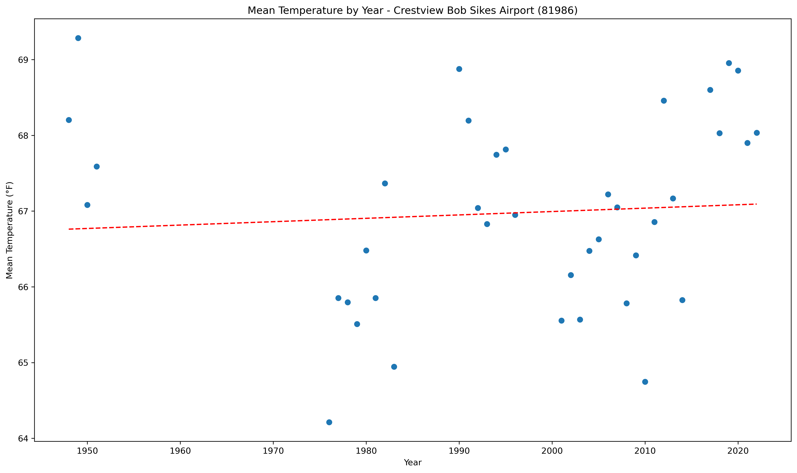</a></div>`)[0];
                popup_5f523ac2fab0ce76ad3a01099e35e2de.setContent(html_dda8dbc6f48b8214d027ec058285df4f);
            
        

        marker_69224b4f9f7dc646e1a3099d591bd774.bindPopup(popup_5f523ac2fab0ce76ad3a01099e35e2de)
        ;

        
    
    
            var marker_c84952e32a4dced7a33b18469e156197 = L.marker(
                [29.63, -83.13],
                {}
            ).addTo(map_ec4c004cf57c215e84f4e973f05e7292);
        
    
            var icon_4b23d35d1251a79b6490c2e75111452d = L.AwesomeMarkers.icon(
                {"extraClasses": "fa-rotate-0", "icon": "info-sign", "iconColor": "white", "markerColor": "orange", "prefix": "glyphicon"}
            );
            marker_c84952e32a4dced7a33b18469e156197.setIcon(icon_4b23d35d1251a79b6490c2e75111452d);
        
    
        var popup_53d58aaafdec494ee722c09cfc2aa5ee = L.popup({"maxWidth": 1000, "minWidth": 500});

        
            
                var html_a7573703a4be7b9264d83600fd9db0ec = $(`<div id="html_a7573703a4be7b9264d83600fd9db0ec" style="width: 100.0%; height: 100.0%;"><b>Cross City 1 E (82008)</b><br>lat: 29.63, lon: -83.13<br><a href='../../static/img/plots/trends/meantemp_yearly/82008_mean_trend_yearly.png' target='_BLANK'></a></div>`)[0];
                popup_53d58aaafdec494ee722c09cfc2aa5ee.setContent(html_a7573703a4be7b9264d83600fd9db0ec);
            
        

        marker_c84952e32a4dced7a33b18469e156197.bindPopup(popup_53d58aaafdec494ee722c09cfc2aa5ee)
        ;

        
    
    
            var marker_c9a2a5cc0d18ef932e49bf15020d1a04 = L.marker(
                [29.16, -81.0],
                {}
            ).addTo(map_ec4c004cf57c215e84f4e973f05e7292);
        
    
            var icon_7a7ac4bf87e75c3d0deffb89391a0798 = L.AwesomeMarkers.icon(
                {"extraClasses": "fa-rotate-0", "icon": "info-sign", "iconColor": "white", "markerColor": "orange", "prefix": "glyphicon"}
            );
            marker_c9a2a5cc0d18ef932e49bf15020d1a04.setIcon(icon_7a7ac4bf87e75c3d0deffb89391a0798);
        
    
        var popup_25bfd47ac777b1069e5bc51bc9a2d409 = L.popup({"maxWidth": 1000, "minWidth": 500});

        
            
                var html_843da7823b18027c991bfe9a5990681a = $(`<div id="html_843da7823b18027c991bfe9a5990681a" style="width: 100.0%; height: 100.0%;"><b>Daytona Beach (82150)</b><br>lat: 29.16, lon: -81<br><a href='../../static/img/plots/trends/meantemp_yearly/82150_mean_trend_yearly.png' target='_BLANK'></a></div>`)[0];
                popup_25bfd47ac777b1069e5bc51bc9a2d409.setContent(html_843da7823b18027c991bfe9a5990681a);
            
        

        marker_c9a2a5cc0d18ef932e49bf15020d1a04.bindPopup(popup_25bfd47ac777b1069e5bc51bc9a2d409)
        ;

        
    
    
            var marker_37cb4372033352eb9466ce6ff6bbc371 = L.marker(
                [29.18, -81.06],
                {}
            ).addTo(map_ec4c004cf57c215e84f4e973f05e7292);
        
    
            var icon_7f0ed045f51550061bac65b870cd1ef2 = L.AwesomeMarkers.icon(
                {"extraClasses": "fa-rotate-0", "icon": "info-sign", "iconColor": "white", "markerColor": "orange", "prefix": "glyphicon"}
            );
            marker_37cb4372033352eb9466ce6ff6bbc371.setIcon(icon_7f0ed045f51550061bac65b870cd1ef2);
        
    
        var popup_5b0abe3b2b31c660ac22c719a22e2642 = L.popup({"maxWidth": 1000, "minWidth": 500});

        
            
                var html_6d570c99663e68029990127e6d5a81ff = $(`<div id="html_6d570c99663e68029990127e6d5a81ff" style="width: 100.0%; height: 100.0%;"><b>Daytona Beach Intl Airport (82158)</b><br>lat: 29.18, lon: -81.06<br><a href='../../static/img/plots/trends/meantemp_yearly/82158_mean_trend_yearly.png' target='_BLANK'></a></div>`)[0];
                popup_5b0abe3b2b31c660ac22c719a22e2642.setContent(html_6d570c99663e68029990127e6d5a81ff);
            
        

        marker_37cb4372033352eb9466ce6ff6bbc371.bindPopup(popup_5b0abe3b2b31c660ac22c719a22e2642)
        ;

        
    
    
            var marker_d3df2d249b33a7185af4e02e24615984 = L.marker(
                [30.72, -86.12],
                {}
            ).addTo(map_ec4c004cf57c215e84f4e973f05e7292);
        
    
            var icon_d4a707e9aec47b46d59c20922e45eaa3 = L.AwesomeMarkers.icon(
                {"extraClasses": "fa-rotate-0", "icon": "info-sign", "iconColor": "white", "markerColor": "blue", "prefix": "glyphicon"}
            );
            marker_d3df2d249b33a7185af4e02e24615984.setIcon(icon_d4a707e9aec47b46d59c20922e45eaa3);
        
    
        var popup_b61d36b105ad22d7454b8719c55fd62e = L.popup({"maxWidth": 1000, "minWidth": 500});

        
            
                var html_bb6e341a43eebaff54fca47c5a736747 = $(`<div id="html_bb6e341a43eebaff54fca47c5a736747" style="width: 100.0%; height: 100.0%;"><b>De Funiak Springs 1 E (82220)</b><br>lat: 30.72, lon: -86.12<br><a href='../../static/img/plots/trends/meantemp_yearly/82220_mean_trend_yearly.png' target='_BLANK'></a></div>`)[0];
                popup_b61d36b105ad22d7454b8719c55fd62e.setContent(html_bb6e341a43eebaff54fca47c5a736747);
            
        

        marker_d3df2d249b33a7185af4e02e24615984.bindPopup(popup_b61d36b105ad22d7454b8719c55fd62e)
        ;

        
    
    
            var marker_93cdc614e3ebc3b6d8122a6fe9632b6b = L.marker(
                [29.03, -81.3],
                {}
            ).addTo(map_ec4c004cf57c215e84f4e973f05e7292);
        
    
            var icon_cb8b266e89a0231a8c62d483855f8965 = L.AwesomeMarkers.icon(
                {"extraClasses": "fa-rotate-0", "icon": "info-sign", "iconColor": "white", "markerColor": "blue", "prefix": "glyphicon"}
            );
            marker_93cdc614e3ebc3b6d8122a6fe9632b6b.setIcon(icon_cb8b266e89a0231a8c62d483855f8965);
        
    
        var popup_803478015462fdf50673ec7d3271517e = L.popup({"maxWidth": 1000, "minWidth": 500});

        
            
                var html_973687103b350ed14073713a837dc2a4 = $(`<div id="html_973687103b350ed14073713a837dc2a4" style="width: 100.0%; height: 100.0%;"><b>Deland 1 SSE (82229)</b><br>lat: 29.03, lon: -81.3<br><a href='../../static/img/plots/trends/meantemp_yearly/82229_mean_trend_yearly.png' target='_BLANK'></a></div>`)[0];
                popup_803478015462fdf50673ec7d3271517e.setContent(html_973687103b350ed14073713a837dc2a4);
            
        

        marker_93cdc614e3ebc3b6d8122a6fe9632b6b.bindPopup(popup_803478015462fdf50673ec7d3271517e)
        ;

        
    
    
            var marker_fe8ff6e1c55b1042ed1a5c751a814062 = L.marker(
                [30.71, -85.72],
                {}
            ).addTo(map_ec4c004cf57c215e84f4e973f05e7292);
        
    
            var icon_0f6c56b34b3a61b5de4a6e067655483b = L.AwesomeMarkers.icon(
                {"extraClasses": "fa-rotate-0", "icon": "info-sign", "iconColor": "white", "markerColor": "orange", "prefix": "glyphicon"}
            );
            marker_fe8ff6e1c55b1042ed1a5c751a814062.setIcon(icon_0f6c56b34b3a61b5de4a6e067655483b);
        
    
        var popup_08dd11197f15548c7827c39e9ad6ade9 = L.popup({"maxWidth": 1000, "minWidth": 500});

        
            
                var html_ec3da37c17e61375f9412c18c871ee5b = $(`<div id="html_ec3da37c17e61375f9412c18c871ee5b" style="width: 100.0%; height: 100.0%;"><b>Devils Garden (82298)</b><br>lat: 30.71, lon: -85.72<br><a href='../../static/img/plots/trends/meantemp_yearly/82298_mean_trend_yearly.png' target='_BLANK'></a></div>`)[0];
                popup_08dd11197f15548c7827c39e9ad6ade9.setContent(html_ec3da37c17e61375f9412c18c871ee5b);
            
        

        marker_fe8ff6e1c55b1042ed1a5c751a814062.bindPopup(popup_08dd11197f15548c7827c39e9ad6ade9)
        ;

        
    
    
            var marker_a1faa50c898f9f6968bb628137cf84a9 = L.marker(
                [25.29, -80.89],
                {}
            ).addTo(map_ec4c004cf57c215e84f4e973f05e7292);
        
    
            var icon_69898ea0d99f1970ddde2007725f73e7 = L.AwesomeMarkers.icon(
                {"extraClasses": "fa-rotate-0", "icon": "info-sign", "iconColor": "white", "markerColor": "orange", "prefix": "glyphicon"}
            );
            marker_a1faa50c898f9f6968bb628137cf84a9.setIcon(icon_69898ea0d99f1970ddde2007725f73e7);
        
    
        var popup_98f0bf94e37f6c2b3998fd1513fd3fad = L.popup({"maxWidth": 1000, "minWidth": 500});

        
            
                var html_f8ca55cd8f9cf1d2fe447d0bf043a361 = $(`<div id="html_f8ca55cd8f9cf1d2fe447d0bf043a361" style="width: 100.0%; height: 100.0%;"><b>Everglades (82850)</b><br>lat: 25.29, lon: -80.89<br><a href='../../static/img/plots/trends/meantemp_yearly/82850_mean_trend_yearly.png' target='_BLANK'></a></div>`)[0];
                popup_98f0bf94e37f6c2b3998fd1513fd3fad.setContent(html_f8ca55cd8f9cf1d2fe447d0bf043a361);
            
        

        marker_a1faa50c898f9f6968bb628137cf84a9.bindPopup(popup_98f0bf94e37f6c2b3998fd1513fd3fad)
        ;

        
    
    
            var marker_ef9a5ae1ac677e57f935f97bf53fcbf8 = L.marker(
                [29.75, -81.54],
                {}
            ).addTo(map_ec4c004cf57c215e84f4e973f05e7292);
        
    
            var icon_f91f88e0784cddb2293ca1f8a117c0d7 = L.AwesomeMarkers.icon(
                {"extraClasses": "fa-rotate-0", "icon": "info-sign", "iconColor": "white", "markerColor": "orange", "prefix": "glyphicon"}
            );
            marker_ef9a5ae1ac677e57f935f97bf53fcbf8.setIcon(icon_f91f88e0784cddb2293ca1f8a117c0d7);
        
    
        var popup_ffe012b36a279dbff7b76d2c3de24434 = L.popup({"maxWidth": 1000, "minWidth": 500});

        
            
                var html_960ef550da788b97be3b51f5b4db545c = $(`<div id="html_960ef550da788b97be3b51f5b4db545c" style="width: 100.0%; height: 100.0%;"><b>Federal Point (82915)</b><br>lat: 29.75, lon: -81.54<br><a href='../../static/img/plots/trends/meantemp_yearly/82915_mean_trend_yearly.png' target='_BLANK'></a></div>`)[0];
                popup_ffe012b36a279dbff7b76d2c3de24434.setContent(html_960ef550da788b97be3b51f5b4db545c);
            
        

        marker_ef9a5ae1ac677e57f935f97bf53fcbf8.bindPopup(popup_ffe012b36a279dbff7b76d2c3de24434)
        ;

        
    
    
            var marker_d47ba032c16ea961e02809a71fa9a274 = L.marker(
                [30.62, -81.46],
                {}
            ).addTo(map_ec4c004cf57c215e84f4e973f05e7292);
        
    
            var icon_71ca0802b6234b98648ba4c50832cd13 = L.AwesomeMarkers.icon(
                {"extraClasses": "fa-rotate-0", "icon": "info-sign", "iconColor": "white", "markerColor": "blue", "prefix": "glyphicon"}
            );
            marker_d47ba032c16ea961e02809a71fa9a274.setIcon(icon_71ca0802b6234b98648ba4c50832cd13);
        
    
        var popup_0a98f406dd6d4b1641b7dbb7e5e2ede7 = L.popup({"maxWidth": 1000, "minWidth": 500});

        
            
                var html_f09e4799eab3d839f321bf4cda63e71a = $(`<div id="html_f09e4799eab3d839f321bf4cda63e71a" style="width: 100.0%; height: 100.0%;"><b>Fernandina Beach (82944)</b><br>lat: 30.62, lon: -81.46<br><a href='../../static/img/plots/trends/meantemp_yearly/82944_mean_trend_yearly.png' target='_BLANK'></a></div>`)[0];
                popup_0a98f406dd6d4b1641b7dbb7e5e2ede7.setContent(html_f09e4799eab3d839f321bf4cda63e71a);
            
        

        marker_d47ba032c16ea961e02809a71fa9a274.bindPopup(popup_0a98f406dd6d4b1641b7dbb7e5e2ede7)
        ;

        
    
    
            var marker_c86ff3329d90c070029d45704dc25052 = L.marker(
                [25.14, -80.93],
                {}
            ).addTo(map_ec4c004cf57c215e84f4e973f05e7292);
        
    
            var icon_043a4412a03c0333a1162ce5368dd453 = L.AwesomeMarkers.icon(
                {"extraClasses": "fa-rotate-0", "icon": "info-sign", "iconColor": "white", "markerColor": "red", "prefix": "glyphicon"}
            );
            marker_c86ff3329d90c070029d45704dc25052.setIcon(icon_043a4412a03c0333a1162ce5368dd453);
        
    
        var popup_26da2080ab9e0c1024e04693e71446f6 = L.popup({"maxWidth": 1000, "minWidth": 500});

        
            
                var html_eac35d951f0f452916bf158df00ea130 = $(`<div id="html_eac35d951f0f452916bf158df00ea130" style="width: 100.0%; height: 100.0%;"><b>Flamingo Ranger Station (83020)</b><br>lat: 25.14, lon: -80.93<br><a href='../../static/img/plots/trends/meantemp_yearly/83020_mean_trend_yearly.png' target='_BLANK'></a></div>`)[0];
                popup_26da2080ab9e0c1024e04693e71446f6.setContent(html_eac35d951f0f452916bf158df00ea130);
            
        

        marker_c86ff3329d90c070029d45704dc25052.bindPopup(popup_26da2080ab9e0c1024e04693e71446f6)
        ;

        
    
    
            var marker_b3228a284d6fffc15e40137947c28cba = L.marker(
                [27.53, -80.81],
                {}
            ).addTo(map_ec4c004cf57c215e84f4e973f05e7292);
        
    
            var icon_273cda87c07b2120fa21ab9a1a2c3288 = L.AwesomeMarkers.icon(
                {"extraClasses": "fa-rotate-0", "icon": "info-sign", "iconColor": "white", "markerColor": "orange", "prefix": "glyphicon"}
            );
            marker_b3228a284d6fffc15e40137947c28cba.setIcon(icon_273cda87c07b2120fa21ab9a1a2c3288);
        
    
        var popup_1d2a239e69555b0d4a02c3643d100fb7 = L.popup({"maxWidth": 1000, "minWidth": 500});

        
            
                var html_7f60a03fd2950e8964a27cd01e22b634 = $(`<div id="html_7f60a03fd2950e8964a27cd01e22b634" style="width: 100.0%; height: 100.0%;"><b>Fort Drum (83137)</b><br>lat: 27.53, lon: -80.81<br><a href='../../static/img/plots/trends/meantemp_yearly/83137_mean_trend_yearly.png' target='_BLANK'></a></div>`)[0];
                popup_1d2a239e69555b0d4a02c3643d100fb7.setContent(html_7f60a03fd2950e8964a27cd01e22b634);
            
        

        marker_b3228a284d6fffc15e40137947c28cba.bindPopup(popup_1d2a239e69555b0d4a02c3643d100fb7)
        ;

        
    
    
            var marker_d510cb35b4abb48e695cc8a5b2bc1e20 = L.marker(
                [27.61, -81.94],
                {}
            ).addTo(map_ec4c004cf57c215e84f4e973f05e7292);
        
    
            var icon_538cbaf275851bf79dfa5371ac3dda81 = L.AwesomeMarkers.icon(
                {"extraClasses": "fa-rotate-0", "icon": "info-sign", "iconColor": "white", "markerColor": "red", "prefix": "glyphicon"}
            );
            marker_d510cb35b4abb48e695cc8a5b2bc1e20.setIcon(icon_538cbaf275851bf79dfa5371ac3dda81);
        
    
        var popup_25a5bd8392d98078281e92ddfeb015a5 = L.popup({"maxWidth": 1000, "minWidth": 500});

        
            
                var html_970453da9f170146b5996b50ef86ac2d = $(`<div id="html_970453da9f170146b5996b50ef86ac2d" style="width: 100.0%; height: 100.0%;"><b>Fort Green 12 WSW (83153)</b><br>lat: 27.61, lon: -81.94<br><a href='../../static/img/plots/trends/meantemp_yearly/83153_mean_trend_yearly.png' target='_BLANK'></a></div>`)[0];
                popup_25a5bd8392d98078281e92ddfeb015a5.setContent(html_970453da9f170146b5996b50ef86ac2d);
            
        

        marker_d510cb35b4abb48e695cc8a5b2bc1e20.bindPopup(popup_25a5bd8392d98078281e92ddfeb015a5)
        ;

        
    
    
            var marker_3459b754484abb6f4ab7a7e86af1aed1 = L.marker(
                [26.07, -80.15],
                {}
            ).addTo(map_ec4c004cf57c215e84f4e973f05e7292);
        
    
            var icon_5a4716d1e356e45d3b237ff811a77826 = L.AwesomeMarkers.icon(
                {"extraClasses": "fa-rotate-0", "icon": "info-sign", "iconColor": "white", "markerColor": "orange", "prefix": "glyphicon"}
            );
            marker_3459b754484abb6f4ab7a7e86af1aed1.setIcon(icon_5a4716d1e356e45d3b237ff811a77826);
        
    
        var popup_41cd0b9b8a7b6c265208e55d6ee88bb3 = L.popup({"maxWidth": 1000, "minWidth": 500});

        
            
                var html_aa19c77dac810068859d62c1e155e4e2 = $(`<div id="html_aa19c77dac810068859d62c1e155e4e2" style="width: 100.0%; height: 100.0%;"><b>Ft Lauderdale (83163)</b><br>lat: 26.07, lon: -80.15<br><a href='../../static/img/plots/trends/meantemp_yearly/83163_mean_trend_yearly.png' target='_BLANK'></a></div>`)[0];
                popup_41cd0b9b8a7b6c265208e55d6ee88bb3.setContent(html_aa19c77dac810068859d62c1e155e4e2);
            
        

        marker_3459b754484abb6f4ab7a7e86af1aed1.bindPopup(popup_41cd0b9b8a7b6c265208e55d6ee88bb3)
        ;

        
    
    
            var marker_90338c8d725962c47ca9ac48165e07c3 = L.marker(
                [26.13, -80.11],
                {}
            ).addTo(map_ec4c004cf57c215e84f4e973f05e7292);
        
    
            var icon_3b62ce2ff4a6f67cbf1ffcf815f72275 = L.AwesomeMarkers.icon(
                {"extraClasses": "fa-rotate-0", "icon": "info-sign", "iconColor": "white", "markerColor": "orange", "prefix": "glyphicon"}
            );
            marker_90338c8d725962c47ca9ac48165e07c3.setIcon(icon_3b62ce2ff4a6f67cbf1ffcf815f72275);
        
    
        var popup_ca146923e37d6d393d3120dbad98c5b2 = L.popup({"maxWidth": 1000, "minWidth": 500});

        
            
                var html_aa68d3a0edd22981d570f65673662e0a = $(`<div id="html_aa68d3a0edd22981d570f65673662e0a" style="width: 100.0%; height: 100.0%;"><b>Ft Lauderdale Beach (83168)</b><br>lat: 26.13, lon: -80.11<br><a href='../../static/img/plots/trends/meantemp_yearly/83168_mean_trend_yearly.png' target='_BLANK'>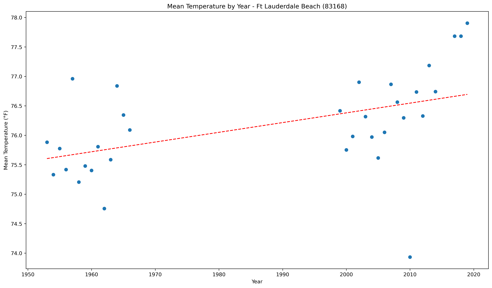</a></div>`)[0];
                popup_ca146923e37d6d393d3120dbad98c5b2.setContent(html_aa68d3a0edd22981d570f65673662e0a);
            
        

        marker_90338c8d725962c47ca9ac48165e07c3.bindPopup(popup_ca146923e37d6d393d3120dbad98c5b2)
        ;

        
    
    
            var marker_43078c4cfb57fe6ad34032d9ac28affe = L.marker(
                [26.59, -81.87],
                {}
            ).addTo(map_ec4c004cf57c215e84f4e973f05e7292);
        
    
            var icon_afe899040008a3cf1cd3817b9a601530 = L.AwesomeMarkers.icon(
                {"extraClasses": "fa-rotate-0", "icon": "info-sign", "iconColor": "white", "markerColor": "orange", "prefix": "glyphicon"}
            );
            marker_43078c4cfb57fe6ad34032d9ac28affe.setIcon(icon_afe899040008a3cf1cd3817b9a601530);
        
    
        var popup_6e559e40b9f0bbb625e40f7d7028113d = L.popup({"maxWidth": 1000, "minWidth": 500});

        
            
                var html_826fce0ad8542812d842a043b50bdd6e = $(`<div id="html_826fce0ad8542812d842a043b50bdd6e" style="width: 100.0%; height: 100.0%;"><b>Fort Myers Page Field Airport (83186)</b><br>lat: 26.59, lon: -81.87<br><a href='../../static/img/plots/trends/meantemp_yearly/83186_mean_trend_yearly.png' target='_BLANK'>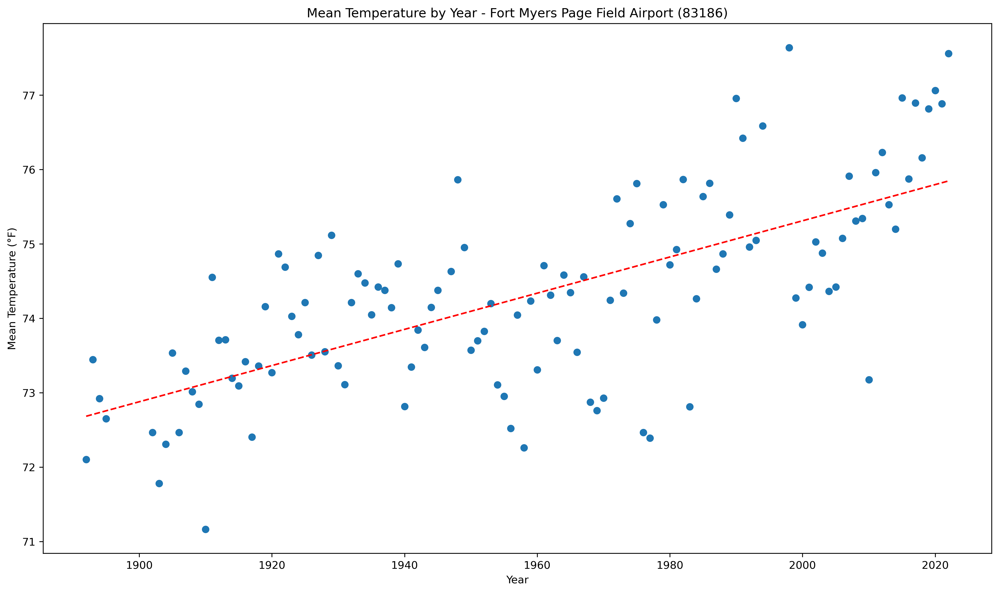</a></div>`)[0];
                popup_6e559e40b9f0bbb625e40f7d7028113d.setContent(html_826fce0ad8542812d842a043b50bdd6e);
            
        

        marker_43078c4cfb57fe6ad34032d9ac28affe.bindPopup(popup_6e559e40b9f0bbb625e40f7d7028113d)
        ;

        
    
    
            var marker_2b1c63790f1e54a51dc1f2a0ee154580 = L.marker(
                [27.44, -80.34],
                {}
            ).addTo(map_ec4c004cf57c215e84f4e973f05e7292);
        
    
            var icon_6a39272684593fc3871947dc771285f6 = L.AwesomeMarkers.icon(
                {"extraClasses": "fa-rotate-0", "icon": "info-sign", "iconColor": "white", "markerColor": "orange", "prefix": "glyphicon"}
            );
            marker_2b1c63790f1e54a51dc1f2a0ee154580.setIcon(icon_6a39272684593fc3871947dc771285f6);
        
    
        var popup_c27f0a27a4498dcd66a3d19f5b363d03 = L.popup({"maxWidth": 1000, "minWidth": 500});

        
            
                var html_4fa165530eed6ffecb67588f8a56223e = $(`<div id="html_4fa165530eed6ffecb67588f8a56223e" style="width: 100.0%; height: 100.0%;"><b>Fort Pierce (83207)</b><br>lat: 27.44, lon: -80.34<br><a href='../../static/img/plots/trends/meantemp_yearly/83207_mean_trend_yearly.png' target='_BLANK'></a></div>`)[0];
                popup_c27f0a27a4498dcd66a3d19f5b363d03.setContent(html_4fa165530eed6ffecb67588f8a56223e);
            
        

        marker_2b1c63790f1e54a51dc1f2a0ee154580.bindPopup(popup_c27f0a27a4498dcd66a3d19f5b363d03)
        ;

        
    
    
            var marker_42dd3aa981621d0d4f434626ec899b05 = L.marker(
                [29.69, -82.28],
                {}
            ).addTo(map_ec4c004cf57c215e84f4e973f05e7292);
        
    
            var icon_5c665a39ebc991bb9a0c5c250e42c068 = L.AwesomeMarkers.icon(
                {"extraClasses": "fa-rotate-0", "icon": "info-sign", "iconColor": "white", "markerColor": "orange", "prefix": "glyphicon"}
            );
            marker_42dd3aa981621d0d4f434626ec899b05.setIcon(icon_5c665a39ebc991bb9a0c5c250e42c068);
        
    
        var popup_d1a46c7062d3d0d8f3e1a109c2fe24bc = L.popup({"maxWidth": 1000, "minWidth": 500});

        
            
                var html_ec6f6f506839f6bd7501955e2e9223e7 = $(`<div id="html_ec6f6f506839f6bd7501955e2e9223e7" style="width: 100.0%; height: 100.0%;"><b>Gainesville Regional Airport (83326)</b><br>lat: 29.69, lon: -82.28<br><a href='../../static/img/plots/trends/meantemp_yearly/83326_mean_trend_yearly.png' target='_BLANK'></a></div>`)[0];
                popup_d1a46c7062d3d0d8f3e1a109c2fe24bc.setContent(html_ec6f6f506839f6bd7501955e2e9223e7);
            
        

        marker_42dd3aa981621d0d4f434626ec899b05.bindPopup(popup_d1a46c7062d3d0d8f3e1a109c2fe24bc)
        ;

        
    
    
            var marker_a51d2c2d70e3f04722d0c8981cf28bda = L.marker(
                [30.28, -82.16],
                {}
            ).addTo(map_ec4c004cf57c215e84f4e973f05e7292);
        
    
            var icon_66ae000492b9f1d0b7eacd8b6240bee3 = L.AwesomeMarkers.icon(
                {"extraClasses": "fa-rotate-0", "icon": "info-sign", "iconColor": "white", "markerColor": "blue", "prefix": "glyphicon"}
            );
            marker_a51d2c2d70e3f04722d0c8981cf28bda.setIcon(icon_66ae000492b9f1d0b7eacd8b6240bee3);
        
    
        var popup_2a3154db4c1e0a65616833fd87e0b49f = L.popup({"maxWidth": 1000, "minWidth": 500});

        
            
                var html_ecc322376aae4dbefa4144a46b44617b = $(`<div id="html_ecc322376aae4dbefa4144a46b44617b" style="width: 100.0%; height: 100.0%;"><b>Glen St Mary 1 W (83470)</b><br>lat: 30.28, lon: -82.16<br><a href='../../static/img/plots/trends/meantemp_yearly/83470_mean_trend_yearly.png' target='_BLANK'>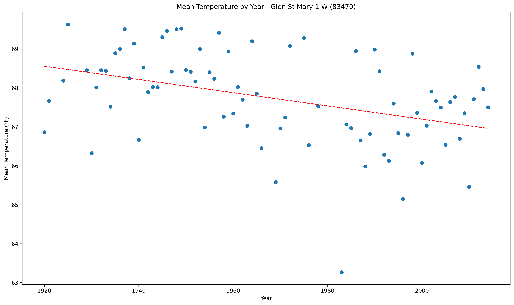</a></div>`)[0];
                popup_2a3154db4c1e0a65616833fd87e0b49f.setContent(html_ecc322376aae4dbefa4144a46b44617b);
            
        

        marker_a51d2c2d70e3f04722d0c8981cf28bda.bindPopup(popup_2a3154db4c1e0a65616833fd87e0b49f)
        ;

        
    
    
            var marker_9d8139efd7fd1b6ad1fcd675c28ff0ef = L.marker(
                [29.72, -81.51],
                {}
            ).addTo(map_ec4c004cf57c215e84f4e973f05e7292);
        
    
            var icon_3d8a1be3bfca0db193e68e7ad386c564 = L.AwesomeMarkers.icon(
                {"extraClasses": "fa-rotate-0", "icon": "info-sign", "iconColor": "white", "markerColor": "orange", "prefix": "glyphicon"}
            );
            marker_9d8139efd7fd1b6ad1fcd675c28ff0ef.setIcon(icon_3d8a1be3bfca0db193e68e7ad386c564);
        
    
        var popup_96fa46fd8948cba020495409718ca29b = L.popup({"maxWidth": 1000, "minWidth": 500});

        
            
                var html_e022bb9e925607f36d3c292cff65ab82 = $(`<div id="html_e022bb9e925607f36d3c292cff65ab82" style="width: 100.0%; height: 100.0%;"><b>Hastings 4 NE (83874)</b><br>lat: 29.72, lon: -81.51<br><a href='../../static/img/plots/trends/meantemp_yearly/83874_mean_trend_yearly.png' target='_BLANK'>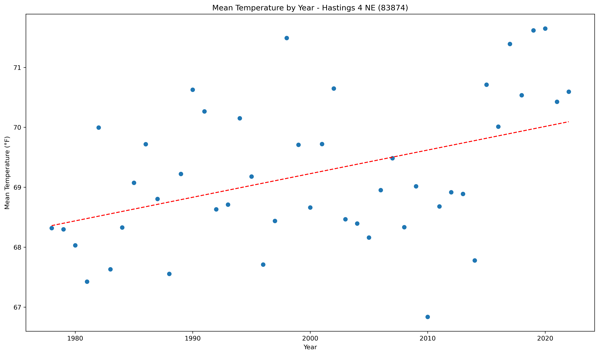</a></div>`)[0];
                popup_96fa46fd8948cba020495409718ca29b.setContent(html_e022bb9e925607f36d3c292cff65ab82);
            
        

        marker_9d8139efd7fd1b6ad1fcd675c28ff0ef.bindPopup(popup_96fa46fd8948cba020495409718ca29b)
        ;

        
    
    
            var marker_7da907637b831b299546162b5ad47542 = L.marker(
                [25.86, -80.28],
                {}
            ).addTo(map_ec4c004cf57c215e84f4e973f05e7292);
        
    
            var icon_fce5535355779d4b31f08b14596f8ad0 = L.AwesomeMarkers.icon(
                {"extraClasses": "fa-rotate-0", "icon": "info-sign", "iconColor": "white", "markerColor": "red", "prefix": "glyphicon"}
            );
            marker_7da907637b831b299546162b5ad47542.setIcon(icon_fce5535355779d4b31f08b14596f8ad0);
        
    
        var popup_0bb585d0088efd83a9e422c0d0db90d6 = L.popup({"maxWidth": 1000, "minWidth": 500});

        
            
                var html_8efae0242e6e394caf23e5657b060e0b = $(`<div id="html_8efae0242e6e394caf23e5657b060e0b" style="width: 100.0%; height: 100.0%;"><b>Hialeah (83909)</b><br>lat: 25.86, lon: -80.28<br><a href='../../static/img/plots/trends/meantemp_yearly/83909_mean_trend_yearly.png' target='_BLANK'></a></div>`)[0];
                popup_0bb585d0088efd83a9e422c0d0db90d6.setContent(html_8efae0242e6e394caf23e5657b060e0b);
            
        

        marker_7da907637b831b299546162b5ad47542.bindPopup(popup_0bb585d0088efd83a9e422c0d0db90d6)
        ;

        
    
    
            var marker_ff691c5699aeedea0e39156c0da71b0d = L.marker(
                [29.83, -82.6],
                {}
            ).addTo(map_ec4c004cf57c215e84f4e973f05e7292);
        
    
            var icon_4c1eb8494f69ba004d12c5a249f5304d = L.AwesomeMarkers.icon(
                {"extraClasses": "fa-rotate-0", "icon": "info-sign", "iconColor": "white", "markerColor": "blue", "prefix": "glyphicon"}
            );
            marker_ff691c5699aeedea0e39156c0da71b0d.setIcon(icon_4c1eb8494f69ba004d12c5a249f5304d);
        
    
        var popup_bd5f86298b5cd724424a823a491cad6b = L.popup({"maxWidth": 1000, "minWidth": 500});

        
            
                var html_752c4bf6a9fcedc4122a63d846ffbbca = $(`<div id="html_752c4bf6a9fcedc4122a63d846ffbbca" style="width: 100.0%; height: 100.0%;"><b>High Springs (83956)</b><br>lat: 29.83, lon: -82.6<br><a href='../../static/img/plots/trends/meantemp_yearly/83956_mean_trend_yearly.png' target='_BLANK'></a></div>`)[0];
                popup_bd5f86298b5cd724424a823a491cad6b.setContent(html_752c4bf6a9fcedc4122a63d846ffbbca);
            
        

        marker_ff691c5699aeedea0e39156c0da71b0d.bindPopup(popup_bd5f86298b5cd724424a823a491cad6b)
        ;

        
    
    
            var marker_aeb167f824cf5b62795775c935fa1e5f = L.marker(
                [28.14, -82.23],
                {}
            ).addTo(map_ec4c004cf57c215e84f4e973f05e7292);
        
    
            var icon_4a42a9dc596cef53869627cc212a366b = L.AwesomeMarkers.icon(
                {"extraClasses": "fa-rotate-0", "icon": "info-sign", "iconColor": "white", "markerColor": "red", "prefix": "glyphicon"}
            );
            marker_aeb167f824cf5b62795775c935fa1e5f.setIcon(icon_4a42a9dc596cef53869627cc212a366b);
        
    
        var popup_1dc6baf607f3f1d965b6f8e76f8c324d = L.popup({"maxWidth": 1000, "minWidth": 500});

        
            
                var html_fff017e534d14e96c71efd0af93be97e = $(`<div id="html_fff017e534d14e96c71efd0af93be97e" style="width: 100.0%; height: 100.0%;"><b>Hillsborough River State Park (83986)</b><br>lat: 28.14, lon: -82.23<br><a href='../../static/img/plots/trends/meantemp_yearly/83986_mean_trend_yearly.png' target='_BLANK'></a></div>`)[0];
                popup_1dc6baf607f3f1d965b6f8e76f8c324d.setContent(html_fff017e534d14e96c71efd0af93be97e);
            
        

        marker_aeb167f824cf5b62795775c935fa1e5f.bindPopup(popup_1dc6baf607f3f1d965b6f8e76f8c324d)
        ;

        
    
    
            var marker_bf2fd1779fd57e1a4194bc69d2023aa8 = L.marker(
                [26.42, -81.42],
                {}
            ).addTo(map_ec4c004cf57c215e84f4e973f05e7292);
        
    
            var icon_983cd6bb57057add68306b38ed677efa = L.AwesomeMarkers.icon(
                {"extraClasses": "fa-rotate-0", "icon": "info-sign", "iconColor": "white", "markerColor": "orange", "prefix": "glyphicon"}
            );
            marker_bf2fd1779fd57e1a4194bc69d2023aa8.setIcon(icon_983cd6bb57057add68306b38ed677efa);
        
    
        var popup_84b28e8115311471f18bccc904b72689 = L.popup({"maxWidth": 1000, "minWidth": 500});

        
            
                var html_d3f56da78c99368b0780ad1714920a73 = $(`<div id="html_d3f56da78c99368b0780ad1714920a73" style="width: 100.0%; height: 100.0%;"><b>Immokalee (84210)</b><br>lat: 26.42, lon: -81.42<br><a href='../../static/img/plots/trends/meantemp_yearly/84210_mean_trend_yearly.png' target='_BLANK'></a></div>`)[0];
                popup_84b28e8115311471f18bccc904b72689.setContent(html_d3f56da78c99368b0780ad1714920a73);
            
        

        marker_bf2fd1779fd57e1a4194bc69d2023aa8.bindPopup(popup_84b28e8115311471f18bccc904b72689)
        ;

        
    
    
            var marker_f7640b6811855f7ef11714e729f572f5 = L.marker(
                [28.84, -82.34],
                {}
            ).addTo(map_ec4c004cf57c215e84f4e973f05e7292);
        
    
            var icon_cd066542418a21e048b1a25a3793f349 = L.AwesomeMarkers.icon(
                {"extraClasses": "fa-rotate-0", "icon": "info-sign", "iconColor": "white", "markerColor": "orange", "prefix": "glyphicon"}
            );
            marker_f7640b6811855f7ef11714e729f572f5.setIcon(icon_cd066542418a21e048b1a25a3793f349);
        
    
        var popup_091e81c1786efe23f935549256c2a72b = L.popup({"maxWidth": 1000, "minWidth": 500});

        
            
                var html_5b5989bbecb59f9f5ca828950f13422e = $(`<div id="html_5b5989bbecb59f9f5ca828950f13422e" style="width: 100.0%; height: 100.0%;"><b>Iverness 3 SE (84289)</b><br>lat: 28.84, lon: -82.34<br><a href='../../static/img/plots/trends/meantemp_yearly/84289_mean_trend_yearly.png' target='_BLANK'></a></div>`)[0];
                popup_091e81c1786efe23f935549256c2a72b.setContent(html_5b5989bbecb59f9f5ca828950f13422e);
            
        

        marker_f7640b6811855f7ef11714e729f572f5.bindPopup(popup_091e81c1786efe23f935549256c2a72b)
        ;

        
    
    
            var marker_1b44ea6316cad35685b53299828309f0 = L.marker(
                [30.49, -81.68],
                {}
            ).addTo(map_ec4c004cf57c215e84f4e973f05e7292);
        
    
            var icon_e00b97ca5bcdf3f147a72608b47085e9 = L.AwesomeMarkers.icon(
                {"extraClasses": "fa-rotate-0", "icon": "info-sign", "iconColor": "white", "markerColor": "blue", "prefix": "glyphicon"}
            );
            marker_1b44ea6316cad35685b53299828309f0.setIcon(icon_e00b97ca5bcdf3f147a72608b47085e9);
        
    
        var popup_d76d609e8d9a589e7f3074c2e4203b65 = L.popup({"maxWidth": 1000, "minWidth": 500});

        
            
                var html_fe56815fa2dc01b096825ea366d2b6ee = $(`<div id="html_fe56815fa2dc01b096825ea366d2b6ee" style="width: 100.0%; height: 100.0%;"><b>Jacksonville Intl Airport (84358)</b><br>lat: 30.49, lon: -81.68<br><a href='../../static/img/plots/trends/meantemp_yearly/84358_mean_trend_yearly.png' target='_BLANK'></a></div>`)[0];
                popup_d76d609e8d9a589e7f3074c2e4203b65.setContent(html_fe56815fa2dc01b096825ea366d2b6ee);
            
        

        marker_1b44ea6316cad35685b53299828309f0.bindPopup(popup_d76d609e8d9a589e7f3074c2e4203b65)
        ;

        
    
    
            var marker_678d2f6e6b5c26fb6231b003849ea027 = L.marker(
                [30.28, -81.39],
                {}
            ).addTo(map_ec4c004cf57c215e84f4e973f05e7292);
        
    
            var icon_a47e7d18fbac309e0181157debeb0ee4 = L.AwesomeMarkers.icon(
                {"extraClasses": "fa-rotate-0", "icon": "info-sign", "iconColor": "white", "markerColor": "orange", "prefix": "glyphicon"}
            );
            marker_678d2f6e6b5c26fb6231b003849ea027.setIcon(icon_a47e7d18fbac309e0181157debeb0ee4);
        
    
        var popup_53f1f9f47236bf2afe1269cc750dd8f1 = L.popup({"maxWidth": 1000, "minWidth": 500});

        
            
                var html_c06440ada2a03a22cf913c75686678c4 = $(`<div id="html_c06440ada2a03a22cf913c75686678c4" style="width: 100.0%; height: 100.0%;"><b>Jacksonville Beach (84366)</b><br>lat: 30.28, lon: -81.39<br><a href='../../static/img/plots/trends/meantemp_yearly/84366_mean_trend_yearly.png' target='_BLANK'></a></div>`)[0];
                popup_53f1f9f47236bf2afe1269cc750dd8f1.setContent(html_c06440ada2a03a22cf913c75686678c4);
            
        

        marker_678d2f6e6b5c26fb6231b003849ea027.bindPopup(popup_53f1f9f47236bf2afe1269cc750dd8f1)
        ;

        
    
    
            var marker_f9fdbc496fa32833ef351fbd4711fa0a = L.marker(
                [30.52, -82.94],
                {}
            ).addTo(map_ec4c004cf57c215e84f4e973f05e7292);
        
    
            var icon_eccfa2eb3142487eda688baa8633175d = L.AwesomeMarkers.icon(
                {"extraClasses": "fa-rotate-0", "icon": "info-sign", "iconColor": "white", "markerColor": "blue", "prefix": "glyphicon"}
            );
            marker_f9fdbc496fa32833ef351fbd4711fa0a.setIcon(icon_eccfa2eb3142487eda688baa8633175d);
        
    
        var popup_42a6a307cc443e5c611e49a8f7bfae42 = L.popup({"maxWidth": 1000, "minWidth": 500});

        
            
                var html_ebeb87835c5debf4d963b10ff08d9c41 = $(`<div id="html_ebeb87835c5debf4d963b10ff08d9c41" style="width: 100.0%; height: 100.0%;"><b>Jasper (84394)</b><br>lat: 30.52, lon: -82.94<br><a href='../../static/img/plots/trends/meantemp_yearly/84394_mean_trend_yearly.png' target='_BLANK'></a></div>`)[0];
                popup_42a6a307cc443e5c611e49a8f7bfae42.setContent(html_ebeb87835c5debf4d963b10ff08d9c41);
            
        

        marker_f9fdbc496fa32833ef351fbd4711fa0a.bindPopup(popup_42a6a307cc443e5c611e49a8f7bfae42)
        ;

        
    
    
            var marker_0ce111ef40172e3bd758837e12aa7447 = L.marker(
                [24.55, -81.76],
                {}
            ).addTo(map_ec4c004cf57c215e84f4e973f05e7292);
        
    
            var icon_e3764944a1094465f19d8d28f0d817d0 = L.AwesomeMarkers.icon(
                {"extraClasses": "fa-rotate-0", "icon": "info-sign", "iconColor": "white", "markerColor": "orange", "prefix": "glyphicon"}
            );
            marker_0ce111ef40172e3bd758837e12aa7447.setIcon(icon_e3764944a1094465f19d8d28f0d817d0);
        
    
        var popup_47337ab0d1a4f16b744717ae602e0d93 = L.popup({"maxWidth": 1000, "minWidth": 500});

        
            
                var html_8cbfc0098970f255e5e90df3e2440dd3 = $(`<div id="html_8cbfc0098970f255e5e90df3e2440dd3" style="width: 100.0%; height: 100.0%;"><b>Key West Intl Airport (84570)</b><br>lat: 24.55, lon: -81.76<br><a href='../../static/img/plots/trends/meantemp_yearly/84570_mean_trend_yearly.png' target='_BLANK'></a></div>`)[0];
                popup_47337ab0d1a4f16b744717ae602e0d93.setContent(html_8cbfc0098970f255e5e90df3e2440dd3);
            
        

        marker_0ce111ef40172e3bd758837e12aa7447.bindPopup(popup_47337ab0d1a4f16b744717ae602e0d93)
        ;

        
    
    
            var marker_0e55e71fb63edccf7bfd1d5be442bdb6 = L.marker(
                [28.29, -81.41],
                {}
            ).addTo(map_ec4c004cf57c215e84f4e973f05e7292);
        
    
            var icon_3de9647301eaa23d0f4c9aa4402ca038 = L.AwesomeMarkers.icon(
                {"extraClasses": "fa-rotate-0", "icon": "info-sign", "iconColor": "white", "markerColor": "orange", "prefix": "glyphicon"}
            );
            marker_0e55e71fb63edccf7bfd1d5be442bdb6.setIcon(icon_3de9647301eaa23d0f4c9aa4402ca038);
        
    
        var popup_0da559759608cad74a11ea748c69c856 = L.popup({"maxWidth": 1000, "minWidth": 500});

        
            
                var html_a9e1ccdd8d18d1217383001a590ad66b = $(`<div id="html_a9e1ccdd8d18d1217383001a590ad66b" style="width: 100.0%; height: 100.0%;"><b>Kissimmee (84625)</b><br>lat: 28.29, lon: -81.41<br><a href='../../static/img/plots/trends/meantemp_yearly/84625_mean_trend_yearly.png' target='_BLANK'>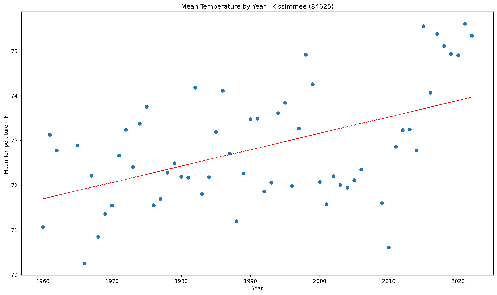</a></div>`)[0];
                popup_0da559759608cad74a11ea748c69c856.setContent(html_a9e1ccdd8d18d1217383001a590ad66b);
            
        

        marker_0e55e71fb63edccf7bfd1d5be442bdb6.bindPopup(popup_0da559759608cad74a11ea748c69c856)
        ;

        
    
    
            var marker_b184acfb4eeeb34a4dde84c5f21046ba = L.marker(
                [26.71, -81.46],
                {}
            ).addTo(map_ec4c004cf57c215e84f4e973f05e7292);
        
    
            var icon_5df12efceadc9b46b29de2a0a3523bcc = L.AwesomeMarkers.icon(
                {"extraClasses": "fa-rotate-0", "icon": "info-sign", "iconColor": "white", "markerColor": "orange", "prefix": "glyphicon"}
            );
            marker_b184acfb4eeeb34a4dde84c5f21046ba.setIcon(icon_5df12efceadc9b46b29de2a0a3523bcc);
        
    
        var popup_37a5840deca8ba4a8593fc09187ea4b5 = L.popup({"maxWidth": 1000, "minWidth": 500});

        
            
                var html_3bcf30f311c71596b413a3aea6850a1a = $(`<div id="html_3bcf30f311c71596b413a3aea6850a1a" style="width: 100.0%; height: 100.0%;"><b>La Belle (84662)</b><br>lat: 26.71, lon: -81.46<br><a href='../../static/img/plots/trends/meantemp_yearly/84662_mean_trend_yearly.png' target='_BLANK'></a></div>`)[0];
                popup_37a5840deca8ba4a8593fc09187ea4b5.setContent(html_3bcf30f311c71596b413a3aea6850a1a);
            
        

        marker_b184acfb4eeeb34a4dde84c5f21046ba.bindPopup(popup_37a5840deca8ba4a8593fc09187ea4b5)
        ;

        
    
    
            var marker_76564cb527822748db20420de9e93e9c = L.marker(
                [30.12, -82.64],
                {}
            ).addTo(map_ec4c004cf57c215e84f4e973f05e7292);
        
    
            var icon_d404cc9954ea99abb8bfd3d9848ed661 = L.AwesomeMarkers.icon(
                {"extraClasses": "fa-rotate-0", "icon": "info-sign", "iconColor": "white", "markerColor": "blue", "prefix": "glyphicon"}
            );
            marker_76564cb527822748db20420de9e93e9c.setIcon(icon_d404cc9954ea99abb8bfd3d9848ed661);
        
    
        var popup_b78c712f6bdf6a9616799aa1aed0d3e9 = L.popup({"maxWidth": 1000, "minWidth": 500});

        
            
                var html_d6dbadd73e89264db54281ab43df2347 = $(`<div id="html_d6dbadd73e89264db54281ab43df2347" style="width: 100.0%; height: 100.0%;"><b>Lake City 2 E (84731)</b><br>lat: 30.12, lon: -82.64<br><a href='../../static/img/plots/trends/meantemp_yearly/84731_mean_trend_yearly.png' target='_BLANK'></a></div>`)[0];
                popup_b78c712f6bdf6a9616799aa1aed0d3e9.setContent(html_d6dbadd73e89264db54281ab43df2347);
            
        

        marker_76564cb527822748db20420de9e93e9c.bindPopup(popup_b78c712f6bdf6a9616799aa1aed0d3e9)
        ;

        
    
    
            var marker_42ebe3dfecbbb0af0b619a77f3928c88 = L.marker(
                [26.88, -81.78],
                {}
            ).addTo(map_ec4c004cf57c215e84f4e973f05e7292);
        
    
            var icon_4ff0aba7292c6af08c1a883d6931ad81 = L.AwesomeMarkers.icon(
                {"extraClasses": "fa-rotate-0", "icon": "info-sign", "iconColor": "white", "markerColor": "orange", "prefix": "glyphicon"}
            );
            marker_42ebe3dfecbbb0af0b619a77f3928c88.setIcon(icon_4ff0aba7292c6af08c1a883d6931ad81);
        
    
        var popup_88f50578398ffc748fd2595189ecd23a = L.popup({"maxWidth": 1000, "minWidth": 500});

        
            
                var html_a93464f1306865b111996d256ce525d6 = $(`<div id="html_a93464f1306865b111996d256ce525d6" style="width: 100.0%; height: 100.0%;"><b>Lisbon (85076)</b><br>lat: 26.88, lon: -81.78<br><a href='../../static/img/plots/trends/meantemp_yearly/85076_mean_trend_yearly.png' target='_BLANK'></a></div>`)[0];
                popup_88f50578398ffc748fd2595189ecd23a.setContent(html_a93464f1306865b111996d256ce525d6);
            
        

        marker_42ebe3dfecbbb0af0b619a77f3928c88.bindPopup(popup_88f50578398ffc748fd2595189ecd23a)
        ;

        
    
    
            var marker_96615ef75c13a0587c1ae8b2832441f4 = L.marker(
                [30.29, -82.99],
                {}
            ).addTo(map_ec4c004cf57c215e84f4e973f05e7292);
        
    
            var icon_af1888a69c3f447881f619ab475312e6 = L.AwesomeMarkers.icon(
                {"extraClasses": "fa-rotate-0", "icon": "info-sign", "iconColor": "white", "markerColor": "orange", "prefix": "glyphicon"}
            );
            marker_96615ef75c13a0587c1ae8b2832441f4.setIcon(icon_af1888a69c3f447881f619ab475312e6);
        
    
        var popup_68c12148a837682f35f143f3aef7a4b5 = L.popup({"maxWidth": 1000, "minWidth": 500});

        
            
                var html_fad02c672832146985df0f2d62bbd1e7 = $(`<div id="html_fad02c672832146985df0f2d62bbd1e7" style="width: 100.0%; height: 100.0%;"><b>Live Oak (85099)</b><br>lat: 30.29, lon: -82.99<br><a href='../../static/img/plots/trends/meantemp_yearly/85099_mean_trend_yearly.png' target='_BLANK'></a></div>`)[0];
                popup_68c12148a837682f35f143f3aef7a4b5.setContent(html_fad02c672832146985df0f2d62bbd1e7);
            
        

        marker_96615ef75c13a0587c1ae8b2832441f4.bindPopup(popup_68c12148a837682f35f143f3aef7a4b5)
        ;

        
    
    
            var marker_7d65dc0d8a9233499455d0dc6d4e661b = L.marker(
                [30.48, -83.24],
                {}
            ).addTo(map_ec4c004cf57c215e84f4e973f05e7292);
        
    
            var icon_63bf22f856cd48f00572af62079cc5e5 = L.AwesomeMarkers.icon(
                {"extraClasses": "fa-rotate-0", "icon": "info-sign", "iconColor": "white", "markerColor": "blue", "prefix": "glyphicon"}
            );
            marker_7d65dc0d8a9233499455d0dc6d4e661b.setIcon(icon_63bf22f856cd48f00572af62079cc5e5);
        
    
        var popup_9d1a5c10fb3a372754b32d98b51db165 = L.popup({"maxWidth": 1000, "minWidth": 500});

        
            
                var html_c8d1309004214825ed0ceb803f85bdce = $(`<div id="html_c8d1309004214825ed0ceb803f85bdce" style="width: 100.0%; height: 100.0%;"><b>Madison (85275)</b><br>lat: 30.48, lon: -83.24<br><a href='../../static/img/plots/trends/meantemp_yearly/85275_mean_trend_yearly.png' target='_BLANK'></a></div>`)[0];
                popup_9d1a5c10fb3a372754b32d98b51db165.setContent(html_c8d1309004214825ed0ceb803f85bdce);
            
        

        marker_7d65dc0d8a9233499455d0dc6d4e661b.bindPopup(popup_9d1a5c10fb3a372754b32d98b51db165)
        ;

        
    
    
            var marker_381bf9ea8f90d3f80ae7a4e60026be4a = L.marker(
                [30.05, -83.18],
                {}
            ).addTo(map_ec4c004cf57c215e84f4e973f05e7292);
        
    
            var icon_eaa15cb2a2556e2b819736c6314fde05 = L.AwesomeMarkers.icon(
                {"extraClasses": "fa-rotate-0", "icon": "info-sign", "iconColor": "white", "markerColor": "orange", "prefix": "glyphicon"}
            );
            marker_381bf9ea8f90d3f80ae7a4e60026be4a.setIcon(icon_eaa15cb2a2556e2b819736c6314fde05);
        
    
        var popup_f5536278faad3e3caeddf91514d7dcae = L.popup({"maxWidth": 1000, "minWidth": 500});

        
            
                var html_aa4104bc979af6a37e4ba3e2654e1e1c = $(`<div id="html_aa4104bc979af6a37e4ba3e2654e1e1c" style="width: 100.0%; height: 100.0%;"><b>Mayo (85539)</b><br>lat: 30.05, lon: -83.18<br><a href='../../static/img/plots/trends/meantemp_yearly/85539_mean_trend_yearly.png' target='_BLANK'></a></div>`)[0];
                popup_f5536278faad3e3caeddf91514d7dcae.setContent(html_aa4104bc979af6a37e4ba3e2654e1e1c);
            
        

        marker_381bf9ea8f90d3f80ae7a4e60026be4a.bindPopup(popup_f5536278faad3e3caeddf91514d7dcae)
        ;

        
    
    
            var marker_579dcc85e16e9cfe93610ba23ba40f4c = L.marker(
                [28.11, -80.66],
                {}
            ).addTo(map_ec4c004cf57c215e84f4e973f05e7292);
        
    
            var icon_ea334f7ba55f67a997c42a90226ce06e = L.AwesomeMarkers.icon(
                {"extraClasses": "fa-rotate-0", "icon": "info-sign", "iconColor": "white", "markerColor": "red", "prefix": "glyphicon"}
            );
            marker_579dcc85e16e9cfe93610ba23ba40f4c.setIcon(icon_ea334f7ba55f67a997c42a90226ce06e);
        
    
        var popup_f1301512ef924c0ac9ddbcb02cbb2353 = L.popup({"maxWidth": 1000, "minWidth": 500});

        
            
                var html_69598b1b6f3d65b0d4ed6691de800252 = $(`<div id="html_69598b1b6f3d65b0d4ed6691de800252" style="width: 100.0%; height: 100.0%;"><b>Melbourne WFO (85612)</b><br>lat: 28.11, lon: -80.66<br><a href='../../static/img/plots/trends/meantemp_yearly/85612_mean_trend_yearly.png' target='_BLANK'></a></div>`)[0];
                popup_f1301512ef924c0ac9ddbcb02cbb2353.setContent(html_69598b1b6f3d65b0d4ed6691de800252);
            
        

        marker_579dcc85e16e9cfe93610ba23ba40f4c.bindPopup(popup_f1301512ef924c0ac9ddbcb02cbb2353)
        ;

        
    
    
            var marker_7d42ba21e8b77ef2833e4aca12ad94e9 = L.marker(
                [25.46, -80.7],
                {}
            ).addTo(map_ec4c004cf57c215e84f4e973f05e7292);
        
    
            var icon_4872a65306a98a3bda73c2b0687f35eb = L.AwesomeMarkers.icon(
                {"extraClasses": "fa-rotate-0", "icon": "info-sign", "iconColor": "white", "markerColor": "orange", "prefix": "glyphicon"}
            );
            marker_7d42ba21e8b77ef2833e4aca12ad94e9.setIcon(icon_4872a65306a98a3bda73c2b0687f35eb);
        
    
        var popup_5187d335df267dfe077d6f312dce670c = L.popup({"maxWidth": 1000, "minWidth": 500});

        
            
                var html_0a949a5b6b1caff2162702e29f2fc74d = $(`<div id="html_0a949a5b6b1caff2162702e29f2fc74d" style="width: 100.0%; height: 100.0%;"><b>Miami Beach (85658)</b><br>lat: 25.46, lon: -80.7<br><a href='../../static/img/plots/trends/meantemp_yearly/85658_mean_trend_yearly.png' target='_BLANK'></a></div>`)[0];
                popup_5187d335df267dfe077d6f312dce670c.setContent(html_0a949a5b6b1caff2162702e29f2fc74d);
            
        

        marker_7d42ba21e8b77ef2833e4aca12ad94e9.bindPopup(popup_5187d335df267dfe077d6f312dce670c)
        ;

        
    
    
            var marker_fabfdeffa6672d12f2f7610a8f57ab08 = L.marker(
                [25.79, -80.28],
                {}
            ).addTo(map_ec4c004cf57c215e84f4e973f05e7292);
        
    
            var icon_3bc71927801cd4140d7c4aa2010bafd0 = L.AwesomeMarkers.icon(
                {"extraClasses": "fa-rotate-0", "icon": "info-sign", "iconColor": "white", "markerColor": "red", "prefix": "glyphicon"}
            );
            marker_fabfdeffa6672d12f2f7610a8f57ab08.setIcon(icon_3bc71927801cd4140d7c4aa2010bafd0);
        
    
        var popup_8f29eb8a1c9087569cd59b4debbe8be1 = L.popup({"maxWidth": 1000, "minWidth": 500});

        
            
                var html_2f2ded68651fd18fd607e395eff93f79 = $(`<div id="html_2f2ded68651fd18fd607e395eff93f79" style="width: 100.0%; height: 100.0%;"><b>Miami Intl Airport (85663)</b><br>lat: 25.79, lon: -80.28<br><a href='../../static/img/plots/trends/meantemp_yearly/85663_mean_trend_yearly.png' target='_BLANK'></a></div>`)[0];
                popup_8f29eb8a1c9087569cd59b4debbe8be1.setContent(html_2f2ded68651fd18fd607e395eff93f79);
            
        

        marker_fabfdeffa6672d12f2f7610a8f57ab08.bindPopup(popup_8f29eb8a1c9087569cd59b4debbe8be1)
        ;

        
    
    
            var marker_33e9c7ba7968a20ce3f9fc97bc6c939d = L.marker(
                [30.29, -83.46],
                {}
            ).addTo(map_ec4c004cf57c215e84f4e973f05e7292);
        
    
            var icon_7a52d934358c5518513255fb1fad7a7f = L.AwesomeMarkers.icon(
                {"extraClasses": "fa-rotate-0", "icon": "info-sign", "iconColor": "white", "markerColor": "blue", "prefix": "glyphicon"}
            );
            marker_33e9c7ba7968a20ce3f9fc97bc6c939d.setIcon(icon_7a52d934358c5518513255fb1fad7a7f);
        
    
        var popup_ef80b4ca3a2405984da10716733aaa4c = L.popup({"maxWidth": 1000, "minWidth": 500});

        
            
                var html_fb228870807f927d07bf30be4b8d838f = $(`<div id="html_fb228870807f927d07bf30be4b8d838f" style="width: 100.0%; height: 100.0%;"><b>Monticello 5 SE (85879)</b><br>lat: 30.29, lon: -83.46<br><a href='../../static/img/plots/trends/meantemp_yearly/85879_mean_trend_yearly.png' target='_BLANK'></a></div>`)[0];
                popup_ef80b4ca3a2405984da10716733aaa4c.setContent(html_fb228870807f927d07bf30be4b8d838f);
            
        

        marker_33e9c7ba7968a20ce3f9fc97bc6c939d.bindPopup(popup_ef80b4ca3a2405984da10716733aaa4c)
        ;

        
    
    
            var marker_2fdb89ad916b2d238992f41d77a066e3 = L.marker(
                [30.55, -83.87],
                {}
            ).addTo(map_ec4c004cf57c215e84f4e973f05e7292);
        
    
            var icon_1936e5d6371acc13eb8e1fe1649c09da = L.AwesomeMarkers.icon(
                {"extraClasses": "fa-rotate-0", "icon": "info-sign", "iconColor": "white", "markerColor": "red", "prefix": "glyphicon"}
            );
            marker_2fdb89ad916b2d238992f41d77a066e3.setIcon(icon_1936e5d6371acc13eb8e1fe1649c09da);
        
    
        var popup_ba87d33928fefc326f4e026c1d6fe4b1 = L.popup({"maxWidth": 1000, "minWidth": 500});

        
            
                var html_4a490fdb44cc92d06f568f618978c049 = $(`<div id="html_4a490fdb44cc92d06f568f618978c049" style="width: 100.0%; height: 100.0%;"><b>Monticello 10 SW (85880)</b><br>lat: 30.55, lon: -83.87<br><a href='../../static/img/plots/trends/meantemp_yearly/85880_mean_trend_yearly.png' target='_BLANK'>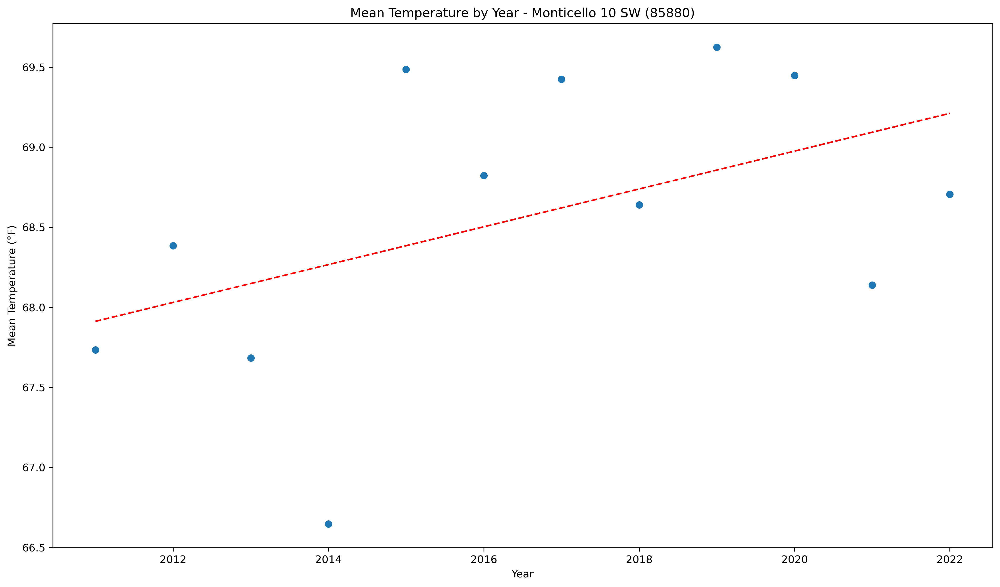</a></div>`)[0];
                popup_ba87d33928fefc326f4e026c1d6fe4b1.setContent(html_4a490fdb44cc92d06f568f618978c049);
            
        

        marker_2fdb89ad916b2d238992f41d77a066e3.bindPopup(popup_ba87d33928fefc326f4e026c1d6fe4b1)
        ;

        
    
    
            var marker_84021a973abce2f137cda5f6be3f05f1 = L.marker(
                [26.84, -81.09],
                {}
            ).addTo(map_ec4c004cf57c215e84f4e973f05e7292);
        
    
            var icon_0b87ae9b9254a3a241533d0ffa8ada78 = L.AwesomeMarkers.icon(
                {"extraClasses": "fa-rotate-0", "icon": "info-sign", "iconColor": "white", "markerColor": "orange", "prefix": "glyphicon"}
            );
            marker_84021a973abce2f137cda5f6be3f05f1.setIcon(icon_0b87ae9b9254a3a241533d0ffa8ada78);
        
    
        var popup_5e006c127519880f043f88a36f8322aa = L.popup({"maxWidth": 1000, "minWidth": 500});

        
            
                var html_408b7cdbe8522fb6d00d575ae7ccae74 = $(`<div id="html_408b7cdbe8522fb6d00d575ae7ccae74" style="width: 100.0%; height: 100.0%;"><b>Moore Haven Lock 1 (85895)</b><br>lat: 26.84, lon: -81.09<br><a href='../../static/img/plots/trends/meantemp_yearly/85895_mean_trend_yearly.png' target='_BLANK'>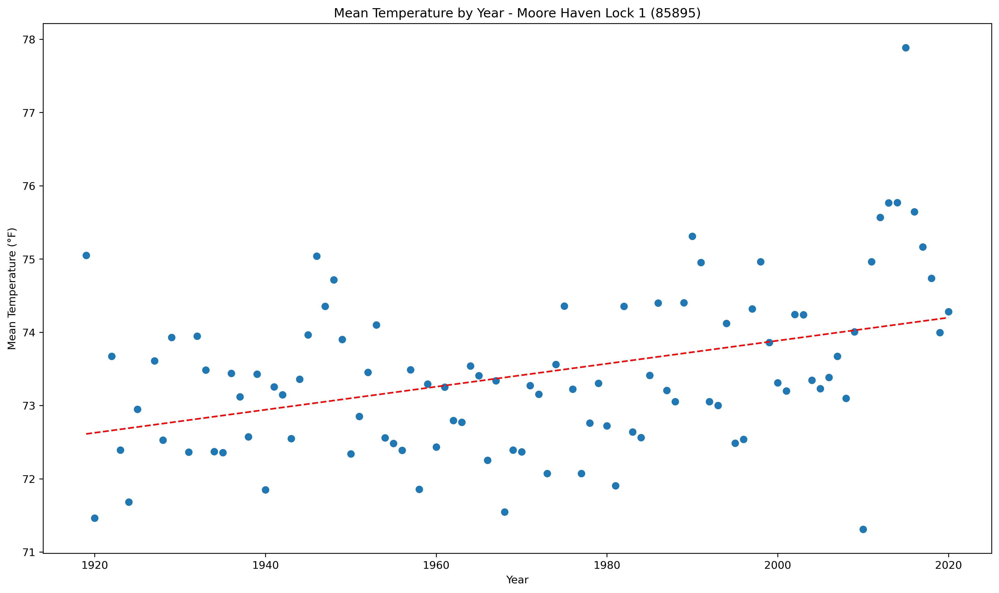</a></div>`)[0];
                popup_5e006c127519880f043f88a36f8322aa.setContent(html_408b7cdbe8522fb6d00d575ae7ccae74);
            
        

        marker_84021a973abce2f137cda5f6be3f05f1.bindPopup(popup_5e006c127519880f043f88a36f8322aa)
        ;

        
    
    
            var marker_75268bbb3c70fae658c8b5a719293651 = L.marker(
                [27.93, -81.59],
                {}
            ).addTo(map_ec4c004cf57c215e84f4e973f05e7292);
        
    
            var icon_b2e45f6984527461d9808d1c9000b069 = L.AwesomeMarkers.icon(
                {"extraClasses": "fa-rotate-0", "icon": "info-sign", "iconColor": "white", "markerColor": "orange", "prefix": "glyphicon"}
            );
            marker_75268bbb3c70fae658c8b5a719293651.setIcon(icon_b2e45f6984527461d9808d1c9000b069);
        
    
        var popup_bac45cde21f1271f2d9948cf31f4c2c0 = L.popup({"maxWidth": 1000, "minWidth": 500});

        
            
                var html_217b28974e791a6cd2dcd9e8ca722646 = $(`<div id="html_217b28974e791a6cd2dcd9e8ca722646" style="width: 100.0%; height: 100.0%;"><b>Mountain Lake (85973)</b><br>lat: 27.93, lon: -81.59<br><a href='../../static/img/plots/trends/meantemp_yearly/85973_mean_trend_yearly.png' target='_BLANK'></a></div>`)[0];
                popup_bac45cde21f1271f2d9948cf31f4c2c0.setContent(html_217b28974e791a6cd2dcd9e8ca722646);
            
        

        marker_75268bbb3c70fae658c8b5a719293651.bindPopup(popup_bac45cde21f1271f2d9948cf31f4c2c0)
        ;

        
    
    
            var marker_8c28b08d37fef3ad93e2a8183f7f6c22 = L.marker(
                [27.2, -82.25],
                {}
            ).addTo(map_ec4c004cf57c215e84f4e973f05e7292);
        
    
            var icon_23cce894289134f53f94cd3f19e3b289 = L.AwesomeMarkers.icon(
                {"extraClasses": "fa-rotate-0", "icon": "info-sign", "iconColor": "white", "markerColor": "red", "prefix": "glyphicon"}
            );
            marker_8c28b08d37fef3ad93e2a8183f7f6c22.setIcon(icon_23cce894289134f53f94cd3f19e3b289);
        
    
        var popup_9da0914f855b799a4914d7aa0e5b3475 = L.popup({"maxWidth": 1000, "minWidth": 500});

        
            
                var html_ccff69963dc3c4134276fe6293667e5c = $(`<div id="html_ccff69963dc3c4134276fe6293667e5c" style="width: 100.0%; height: 100.0%;"><b>Myakka River State Park (86065)</b><br>lat: 27.2, lon: -82.25<br><a href='../../static/img/plots/trends/meantemp_yearly/86065_mean_trend_yearly.png' target='_BLANK'></a></div>`)[0];
                popup_9da0914f855b799a4914d7aa0e5b3475.setContent(html_ccff69963dc3c4134276fe6293667e5c);
            
        

        marker_8c28b08d37fef3ad93e2a8183f7f6c22.bindPopup(popup_9da0914f855b799a4914d7aa0e5b3475)
        ;

        
    
    
            var marker_29c77fc5de7bfeff82075adba632f4c0 = L.marker(
                [26.15, -81.77],
                {}
            ).addTo(map_ec4c004cf57c215e84f4e973f05e7292);
        
    
            var icon_10b05558796f0cc6330a162d4efb6fd8 = L.AwesomeMarkers.icon(
                {"extraClasses": "fa-rotate-0", "icon": "info-sign", "iconColor": "white", "markerColor": "orange", "prefix": "glyphicon"}
            );
            marker_29c77fc5de7bfeff82075adba632f4c0.setIcon(icon_10b05558796f0cc6330a162d4efb6fd8);
        
    
        var popup_3c1181838f0236ca50a15267530a0c3b = L.popup({"maxWidth": 1000, "minWidth": 500});

        
            
                var html_2a8a51f54d04fb8929436214a90579ac = $(`<div id="html_2a8a51f54d04fb8929436214a90579ac" style="width: 100.0%; height: 100.0%;"><b>Naples (86078)</b><br>lat: 26.15, lon: -81.77<br><a href='../../static/img/plots/trends/meantemp_yearly/86078_mean_trend_yearly.png' target='_BLANK'></a></div>`)[0];
                popup_3c1181838f0236ca50a15267530a0c3b.setContent(html_2a8a51f54d04fb8929436214a90579ac);
            
        

        marker_29c77fc5de7bfeff82075adba632f4c0.bindPopup(popup_3c1181838f0236ca50a15267530a0c3b)
        ;

        
    
    
            var marker_6bba8f58d4afc4d9c275090b1327b642 = L.marker(
                [30.52, -86.48],
                {}
            ).addTo(map_ec4c004cf57c215e84f4e973f05e7292);
        
    
            var icon_f74f57595ea787ce2293a0686b7e2d7d = L.AwesomeMarkers.icon(
                {"extraClasses": "fa-rotate-0", "icon": "info-sign", "iconColor": "white", "markerColor": "blue", "prefix": "glyphicon"}
            );
            marker_6bba8f58d4afc4d9c275090b1327b642.setIcon(icon_f74f57595ea787ce2293a0686b7e2d7d);
        
    
        var popup_a493e15938c617ba0da1f0ad8e7c8192 = L.popup({"maxWidth": 1000, "minWidth": 500});

        
            
                var html_0545212a741852df2de867d706f68dca = $(`<div id="html_0545212a741852df2de867d706f68dca" style="width: 100.0%; height: 100.0%;"><b>Niceville (86240)</b><br>lat: 30.52, lon: -86.48<br><a href='../../static/img/plots/trends/meantemp_yearly/86240_mean_trend_yearly.png' target='_BLANK'></a></div>`)[0];
                popup_a493e15938c617ba0da1f0ad8e7c8192.setContent(html_0545212a741852df2de867d706f68dca);
            
        

        marker_6bba8f58d4afc4d9c275090b1327b642.bindPopup(popup_a493e15938c617ba0da1f0ad8e7c8192)
        ;

        
    
    
            var marker_d6849034597b05907c7825e7f9fb2792 = L.marker(
                [25.86, -81.03],
                {}
            ).addTo(map_ec4c004cf57c215e84f4e973f05e7292);
        
    
            var icon_3e1231e7c14cca8d5c49f9f16503168f = L.AwesomeMarkers.icon(
                {"extraClasses": "fa-rotate-0", "icon": "info-sign", "iconColor": "white", "markerColor": "blue", "prefix": "glyphicon"}
            );
            marker_d6849034597b05907c7825e7f9fb2792.setIcon(icon_3e1231e7c14cca8d5c49f9f16503168f);
        
    
        var popup_09e0851810c4acaf253e657fbcfe567d = L.popup({"maxWidth": 1000, "minWidth": 500});

        
            
                var html_1027ee7ed5eaa873b28a3c2461b82529 = $(`<div id="html_1027ee7ed5eaa873b28a3c2461b82529" style="width: 100.0%; height: 100.0%;"><b>Oasis Ranger Station (86406)</b><br>lat: 25.86, lon: -81.03<br><a href='../../static/img/plots/trends/meantemp_yearly/86406_mean_trend_yearly.png' target='_BLANK'></a></div>`)[0];
                popup_09e0851810c4acaf253e657fbcfe567d.setContent(html_1027ee7ed5eaa873b28a3c2461b82529);
            
        

        marker_d6849034597b05907c7825e7f9fb2792.bindPopup(popup_09e0851810c4acaf253e657fbcfe567d)
        ;

        
    
    
            var marker_f3eccfb43a95bbff3e7262598cee4aad = L.marker(
                [29.19, -82.14],
                {}
            ).addTo(map_ec4c004cf57c215e84f4e973f05e7292);
        
    
            var icon_93384fb3be34350c55ba7b3b41784ce9 = L.AwesomeMarkers.icon(
                {"extraClasses": "fa-rotate-0", "icon": "info-sign", "iconColor": "white", "markerColor": "orange", "prefix": "glyphicon"}
            );
            marker_f3eccfb43a95bbff3e7262598cee4aad.setIcon(icon_93384fb3be34350c55ba7b3b41784ce9);
        
    
        var popup_7a913c181ef0359452738d1578a3f544 = L.popup({"maxWidth": 1000, "minWidth": 500});

        
            
                var html_eeed0d8acb60d1838579d5bb79ce0412 = $(`<div id="html_eeed0d8acb60d1838579d5bb79ce0412" style="width: 100.0%; height: 100.0%;"><b>Ocala (86414)</b><br>lat: 29.19, lon: -82.14<br><a href='../../static/img/plots/trends/meantemp_yearly/86414_mean_trend_yearly.png' target='_BLANK'></a></div>`)[0];
                popup_7a913c181ef0359452738d1578a3f544.setContent(html_eeed0d8acb60d1838579d5bb79ce0412);
            
        

        marker_f3eccfb43a95bbff3e7262598cee4aad.bindPopup(popup_7a913c181ef0359452738d1578a3f544)
        ;

        
    
    
            var marker_5bd5f62dec0de82c9959823624fa2f33 = L.marker(
                [27.24, -80.83],
                {}
            ).addTo(map_ec4c004cf57c215e84f4e973f05e7292);
        
    
            var icon_db1253639ccbb6ef019231ce215cace6 = L.AwesomeMarkers.icon(
                {"extraClasses": "fa-rotate-0", "icon": "info-sign", "iconColor": "white", "markerColor": "orange", "prefix": "glyphicon"}
            );
            marker_5bd5f62dec0de82c9959823624fa2f33.setIcon(icon_db1253639ccbb6ef019231ce215cace6);
        
    
        var popup_6ba947028e5be362dddea7824238c7fd = L.popup({"maxWidth": 1000, "minWidth": 500});

        
            
                var html_2bffc4358d173f43d1abdcd4d26a96a8 = $(`<div id="html_2bffc4358d173f43d1abdcd4d26a96a8" style="width: 100.0%; height: 100.0%;"><b>Okeechobee (86485)</b><br>lat: 27.24, lon: -80.83<br><a href='../../static/img/plots/trends/meantemp_yearly/86485_mean_trend_yearly.png' target='_BLANK'></a></div>`)[0];
                popup_6ba947028e5be362dddea7824238c7fd.setContent(html_2bffc4358d173f43d1abdcd4d26a96a8);
            
        

        marker_5bd5f62dec0de82c9959823624fa2f33.bindPopup(popup_6ba947028e5be362dddea7824238c7fd)
        ;

        
    
    
            var marker_55c321d2c4e4326fd18961f2e39d77d4 = L.marker(
                [28.43, -81.31],
                {}
            ).addTo(map_ec4c004cf57c215e84f4e973f05e7292);
        
    
            var icon_e888b3611062d0774e3463569a5252a2 = L.AwesomeMarkers.icon(
                {"extraClasses": "fa-rotate-0", "icon": "info-sign", "iconColor": "white", "markerColor": "red", "prefix": "glyphicon"}
            );
            marker_55c321d2c4e4326fd18961f2e39d77d4.setIcon(icon_e888b3611062d0774e3463569a5252a2);
        
    
        var popup_1fb7e5c24f1e044ab0da53074193e15b = L.popup({"maxWidth": 1000, "minWidth": 500});

        
            
                var html_6b17a39d4f1cd98b3214169cbf6f7821 = $(`<div id="html_6b17a39d4f1cd98b3214169cbf6f7821" style="width: 100.0%; height: 100.0%;"><b>Orlando Intl Airport (86628)</b><br>lat: 28.43, lon: -81.31<br><a href='../../static/img/plots/trends/meantemp_yearly/86628_mean_trend_yearly.png' target='_BLANK'></a></div>`)[0];
                popup_1fb7e5c24f1e044ab0da53074193e15b.setContent(html_6b17a39d4f1cd98b3214169cbf6f7821);
            
        

        marker_55c321d2c4e4326fd18961f2e39d77d4.bindPopup(popup_1fb7e5c24f1e044ab0da53074193e15b)
        ;

        
    
    
            var marker_94ea13c04f92d9c50fd355e38a6b15be = L.marker(
                [30.18, -85.67],
                {}
            ).addTo(map_ec4c004cf57c215e84f4e973f05e7292);
        
    
            var icon_08a7e72f3e6c17b7e396e1da991e9940 = L.AwesomeMarkers.icon(
                {"extraClasses": "fa-rotate-0", "icon": "info-sign", "iconColor": "white", "markerColor": "red", "prefix": "glyphicon"}
            );
            marker_94ea13c04f92d9c50fd355e38a6b15be.setIcon(icon_08a7e72f3e6c17b7e396e1da991e9940);
        
    
        var popup_a632a966cc22b9c9a993ee965c42308e = L.popup({"maxWidth": 1000, "minWidth": 500});

        
            
                var html_27578a88b04c80610879d37795428d07 = $(`<div id="html_27578a88b04c80610879d37795428d07" style="width: 100.0%; height: 100.0%;"><b>Panama City 5N (86842)</b><br>lat: 30.18, lon: -85.67<br><a href='../../static/img/plots/trends/meantemp_yearly/86842_mean_trend_yearly.png' target='_BLANK'></a></div>`)[0];
                popup_a632a966cc22b9c9a993ee965c42308e.setContent(html_27578a88b04c80610879d37795428d07);
            
        

        marker_94ea13c04f92d9c50fd355e38a6b15be.bindPopup(popup_a632a966cc22b9c9a993ee965c42308e)
        ;

        
    
    
            var marker_1fead9d7aaeacc5baa88e6dffae5c29a = L.marker(
                [27.59, -82.43],
                {}
            ).addTo(map_ec4c004cf57c215e84f4e973f05e7292);
        
    
            var icon_bed8353232255c07d1a841ce710af37b = L.AwesomeMarkers.icon(
                {"extraClasses": "fa-rotate-0", "icon": "info-sign", "iconColor": "white", "markerColor": "blue", "prefix": "glyphicon"}
            );
            marker_1fead9d7aaeacc5baa88e6dffae5c29a.setIcon(icon_bed8353232255c07d1a841ce710af37b);
        
    
        var popup_84ce590259478333e14a67c0cd114b66 = L.popup({"maxWidth": 1000, "minWidth": 500});

        
            
                var html_080312f301894724d9fb3bb0b484968f = $(`<div id="html_080312f301894724d9fb3bb0b484968f" style="width: 100.0%; height: 100.0%;"><b>Parrish (86880)</b><br>lat: 27.59, lon: -82.43<br><a href='../../static/img/plots/trends/meantemp_yearly/86880_mean_trend_yearly.png' target='_BLANK'></a></div>`)[0];
                popup_84ce590259478333e14a67c0cd114b66.setContent(html_080312f301894724d9fb3bb0b484968f);
            
        

        marker_1fead9d7aaeacc5baa88e6dffae5c29a.bindPopup(popup_84ce590259478333e14a67c0cd114b66)
        ;

        
    
    
            var marker_b44e06dc6abfb58af9be2407bdef6c2d = L.marker(
                [30.48, -87.19],
                {}
            ).addTo(map_ec4c004cf57c215e84f4e973f05e7292);
        
    
            var icon_4c4560bcf598781643db635057333e20 = L.AwesomeMarkers.icon(
                {"extraClasses": "fa-rotate-0", "icon": "info-sign", "iconColor": "white", "markerColor": "orange", "prefix": "glyphicon"}
            );
            marker_b44e06dc6abfb58af9be2407bdef6c2d.setIcon(icon_4c4560bcf598781643db635057333e20);
        
    
        var popup_bd47539442a6c6e9ca4fcf3902c29bdf = L.popup({"maxWidth": 1000, "minWidth": 500});

        
            
                var html_3aaa0548d54f24c60fe52d723068d286 = $(`<div id="html_3aaa0548d54f24c60fe52d723068d286" style="width: 100.0%; height: 100.0%;"><b>Pensacola Regional Airport (86997)</b><br>lat: 30.48, lon: -87.19<br><a href='../../static/img/plots/trends/meantemp_yearly/86997_mean_trend_yearly.png' target='_BLANK'></a></div>`)[0];
                popup_bd47539442a6c6e9ca4fcf3902c29bdf.setContent(html_3aaa0548d54f24c60fe52d723068d286);
            
        

        marker_b44e06dc6abfb58af9be2407bdef6c2d.bindPopup(popup_bd47539442a6c6e9ca4fcf3902c29bdf)
        ;

        
    
    
            var marker_7d3accac9d6b48d8409aace9b3368c43 = L.marker(
                [25.59, -80.36],
                {}
            ).addTo(map_ec4c004cf57c215e84f4e973f05e7292);
        
    
            var icon_eab13f472b8269581964d0062932f710 = L.AwesomeMarkers.icon(
                {"extraClasses": "fa-rotate-0", "icon": "info-sign", "iconColor": "white", "markerColor": "red", "prefix": "glyphicon"}
            );
            marker_7d3accac9d6b48d8409aace9b3368c43.setIcon(icon_eab13f472b8269581964d0062932f710);
        
    
        var popup_deaaba11ed1e5d8330e9122a14df4b3f = L.popup({"maxWidth": 1000, "minWidth": 500});

        
            
                var html_295e3935b827e83de78a333855b98b8d = $(`<div id="html_295e3935b827e83de78a333855b98b8d" style="width: 100.0%; height: 100.0%;"><b>Perrine 4W (87020)</b><br>lat: 25.59, lon: -80.36<br><a href='../../static/img/plots/trends/meantemp_yearly/87020_mean_trend_yearly.png' target='_BLANK'></a></div>`)[0];
                popup_deaaba11ed1e5d8330e9122a14df4b3f.setContent(html_295e3935b827e83de78a333855b98b8d);
            
        

        marker_7d3accac9d6b48d8409aace9b3368c43.bindPopup(popup_deaaba11ed1e5d8330e9122a14df4b3f)
        ;

        
    
    
            var marker_66bfd04e2266b52d3bfec80408b1c2a2 = L.marker(
                [30.11, -83.58],
                {}
            ).addTo(map_ec4c004cf57c215e84f4e973f05e7292);
        
    
            var icon_02450cf9d106e1e6abc6f2c0f431d55f = L.AwesomeMarkers.icon(
                {"extraClasses": "fa-rotate-0", "icon": "info-sign", "iconColor": "white", "markerColor": "orange", "prefix": "glyphicon"}
            );
            marker_66bfd04e2266b52d3bfec80408b1c2a2.setIcon(icon_02450cf9d106e1e6abc6f2c0f431d55f);
        
    
        var popup_5911e769f487b6d165bda03a5e9896d0 = L.popup({"maxWidth": 1000, "minWidth": 500});

        
            
                var html_0bc2c0ec5a0d54b6e3fc3c896699e09f = $(`<div id="html_0bc2c0ec5a0d54b6e3fc3c896699e09f" style="width: 100.0%; height: 100.0%;"><b>Perry (87025)</b><br>lat: 30.11, lon: -83.58<br><a href='../../static/img/plots/trends/meantemp_yearly/87025_mean_trend_yearly.png' target='_BLANK'></a></div>`)[0];
                popup_5911e769f487b6d165bda03a5e9896d0.setContent(html_0bc2c0ec5a0d54b6e3fc3c896699e09f);
            
        

        marker_66bfd04e2266b52d3bfec80408b1c2a2.bindPopup(popup_5911e769f487b6d165bda03a5e9896d0)
        ;

        
    
    
            var marker_19705cd7a39a304bc5f8342332f63e32 = L.marker(
                [28.01, -82.16],
                {}
            ).addTo(map_ec4c004cf57c215e84f4e973f05e7292);
        
    
            var icon_f106cda104bcb3ab034a55e425c04fc6 = L.AwesomeMarkers.icon(
                {"extraClasses": "fa-rotate-0", "icon": "info-sign", "iconColor": "white", "markerColor": "orange", "prefix": "glyphicon"}
            );
            marker_19705cd7a39a304bc5f8342332f63e32.setIcon(icon_f106cda104bcb3ab034a55e425c04fc6);
        
    
        var popup_de4744f0d0ee629206cc91770aa58368 = L.popup({"maxWidth": 1000, "minWidth": 500});

        
            
                var html_8148d80bf033b6557fe99fe507997dae = $(`<div id="html_8148d80bf033b6557fe99fe507997dae" style="width: 100.0%; height: 100.0%;"><b>Plant City (87205)</b><br>lat: 28.01, lon: -82.16<br><a href='../../static/img/plots/trends/meantemp_yearly/87205_mean_trend_yearly.png' target='_BLANK'>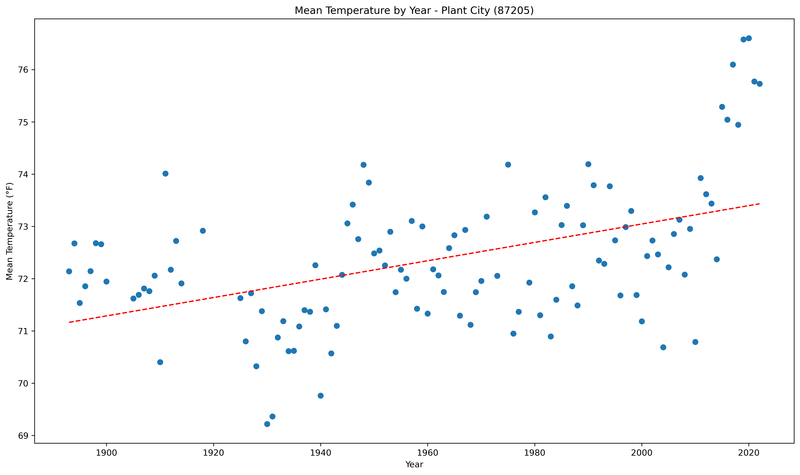</a></div>`)[0];
                popup_de4744f0d0ee629206cc91770aa58368.setContent(html_8148d80bf033b6557fe99fe507997dae);
            
        

        marker_19705cd7a39a304bc5f8342332f63e32.bindPopup(popup_de4744f0d0ee629206cc91770aa58368)
        ;

        
    
    
            var marker_11dfa5721df4db36ef1fd54366d546fc = L.marker(
                [26.92, -82.0],
                {}
            ).addTo(map_ec4c004cf57c215e84f4e973f05e7292);
        
    
            var icon_4f7cb9cae796c5ae09f99b604ce04d7e = L.AwesomeMarkers.icon(
                {"extraClasses": "fa-rotate-0", "icon": "info-sign", "iconColor": "white", "markerColor": "red", "prefix": "glyphicon"}
            );
            marker_11dfa5721df4db36ef1fd54366d546fc.setIcon(icon_4f7cb9cae796c5ae09f99b604ce04d7e);
        
    
        var popup_0f4304a3a8bf5833dc9d0ce6ce7fc322 = L.popup({"maxWidth": 1000, "minWidth": 500});

        
            
                var html_105383775d248be4ec9000a29a677ac4 = $(`<div id="html_105383775d248be4ec9000a29a677ac4" style="width: 100.0%; height: 100.0%;"><b>Punta Gorda 4 ESE (87397)</b><br>lat: 26.92, lon: -82<br><a href='../../static/img/plots/trends/meantemp_yearly/87397_mean_trend_yearly.png' target='_BLANK'></a></div>`)[0];
                popup_0f4304a3a8bf5833dc9d0ce6ce7fc322.setContent(html_105383775d248be4ec9000a29a677ac4);
            
        

        marker_11dfa5721df4db36ef1fd54366d546fc.bindPopup(popup_0f4304a3a8bf5833dc9d0ce6ce7fc322)
        ;

        
    
    
            var marker_272cebc2a49637a5dd37af9790d75966 = L.marker(
                [30.59, -84.59],
                {}
            ).addTo(map_ec4c004cf57c215e84f4e973f05e7292);
        
    
            var icon_79d3d0d7cc4cf0c2bb860105ad8e09c1 = L.AwesomeMarkers.icon(
                {"extraClasses": "fa-rotate-0", "icon": "info-sign", "iconColor": "white", "markerColor": "red", "prefix": "glyphicon"}
            );
            marker_272cebc2a49637a5dd37af9790d75966.setIcon(icon_79d3d0d7cc4cf0c2bb860105ad8e09c1);
        
    
        var popup_213c102d8d2365864bb97d919753e35b = L.popup({"maxWidth": 1000, "minWidth": 500});

        
            
                var html_3ea557840fcc138440dc7075c17afdbb = $(`<div id="html_3ea557840fcc138440dc7075c17afdbb" style="width: 100.0%; height: 100.0%;"><b>Quincy 3 SSW (87429)</b><br>lat: 30.59, lon: -84.59<br><a href='../../static/img/plots/trends/meantemp_yearly/87429_mean_trend_yearly.png' target='_BLANK'></a></div>`)[0];
                popup_213c102d8d2365864bb97d919753e35b.setContent(html_3ea557840fcc138440dc7075c17afdbb);
            
        

        marker_272cebc2a49637a5dd37af9790d75966.bindPopup(popup_213c102d8d2365864bb97d919753e35b)
        ;

        
    
    
            var marker_59d26e7d845a14c8a0bd8dccb62e5ef2 = L.marker(
                [25.38, -80.61],
                {}
            ).addTo(map_ec4c004cf57c215e84f4e973f05e7292);
        
    
            var icon_a9f26f8a49add623b53d797843b6e53d = L.AwesomeMarkers.icon(
                {"extraClasses": "fa-rotate-0", "icon": "info-sign", "iconColor": "white", "markerColor": "red", "prefix": "glyphicon"}
            );
            marker_59d26e7d845a14c8a0bd8dccb62e5ef2.setIcon(icon_a9f26f8a49add623b53d797843b6e53d);
        
    
        var popup_eeaa43ddedd091db23148487de4cca35 = L.popup({"maxWidth": 1000, "minWidth": 500});

        
            
                var html_5a6a74025f8ae26fccb040d87e87cbfe = $(`<div id="html_5a6a74025f8ae26fccb040d87e87cbfe" style="width: 100.0%; height: 100.0%;"><b>Royal Palm Ranger Station (87760)</b><br>lat: 25.38, lon: -80.61<br><a href='../../static/img/plots/trends/meantemp_yearly/87760_mean_trend_yearly.png' target='_BLANK'></a></div>`)[0];
                popup_eeaa43ddedd091db23148487de4cca35.setContent(html_5a6a74025f8ae26fccb040d87e87cbfe);
            
        

        marker_59d26e7d845a14c8a0bd8dccb62e5ef2.bindPopup(popup_eeaa43ddedd091db23148487de4cca35)
        ;

        
    
    
            var marker_ffd50cd064946757cf859e4d0e76f0f6 = L.marker(
                [29.89, -81.29],
                {}
            ).addTo(map_ec4c004cf57c215e84f4e973f05e7292);
        
    
            var icon_1eff2a70c0b1bb68a8f075677a703895 = L.AwesomeMarkers.icon(
                {"extraClasses": "fa-rotate-0", "icon": "info-sign", "iconColor": "white", "markerColor": "red", "prefix": "glyphicon"}
            );
            marker_ffd50cd064946757cf859e4d0e76f0f6.setIcon(icon_1eff2a70c0b1bb68a8f075677a703895);
        
    
        var popup_516e5d9937b0886e46c0462a686ce4be = L.popup({"maxWidth": 1000, "minWidth": 500});

        
            
                var html_b9fbdae53a5c97e823d331891f62b4c6 = $(`<div id="html_b9fbdae53a5c97e823d331891f62b4c6" style="width: 100.0%; height: 100.0%;"><b>St. Augustine Lighthouse (87826)</b><br>lat: 29.89, lon: -81.29<br><a href='../../static/img/plots/trends/meantemp_yearly/87826_mean_trend_yearly.png' target='_BLANK'></a></div>`)[0];
                popup_516e5d9937b0886e46c0462a686ce4be.setContent(html_b9fbdae53a5c97e823d331891f62b4c6);
            
        

        marker_ffd50cd064946757cf859e4d0e76f0f6.bindPopup(popup_516e5d9937b0886e46c0462a686ce4be)
        ;

        
    
    
            var marker_f04a247a5c6748efa30e7aba6eb1e3e9 = L.marker(
                [28.34, -82.26],
                {}
            ).addTo(map_ec4c004cf57c215e84f4e973f05e7292);
        
    
            var icon_0bece1cf17e46f988966629442e45c4d = L.AwesomeMarkers.icon(
                {"extraClasses": "fa-rotate-0", "icon": "info-sign", "iconColor": "white", "markerColor": "orange", "prefix": "glyphicon"}
            );
            marker_f04a247a5c6748efa30e7aba6eb1e3e9.setIcon(icon_0bece1cf17e46f988966629442e45c4d);
        
    
        var popup_8ff36adc134ddf20e228a50eb4fe38af = L.popup({"maxWidth": 1000, "minWidth": 500});

        
            
                var html_432f942ed7877b7776557c758af62f80 = $(`<div id="html_432f942ed7877b7776557c758af62f80" style="width: 100.0%; height: 100.0%;"><b>Sain Leo (87851)</b><br>lat: 28.34, lon: -82.26<br><a href='../../static/img/plots/trends/meantemp_yearly/87851_mean_trend_yearly.png' target='_BLANK'></a></div>`)[0];
                popup_8ff36adc134ddf20e228a50eb4fe38af.setContent(html_432f942ed7877b7776557c758af62f80);
            
        

        marker_f04a247a5c6748efa30e7aba6eb1e3e9.bindPopup(popup_8ff36adc134ddf20e228a50eb4fe38af)
        ;

        
    
    
            var marker_6dffc36001a3bf0bebd61ac43bcd3719 = L.marker(
                [27.91, -82.69],
                {}
            ).addTo(map_ec4c004cf57c215e84f4e973f05e7292);
        
    
            var icon_a4120c6b182b7ee0358b6f58537dc2ba = L.AwesomeMarkers.icon(
                {"extraClasses": "fa-rotate-0", "icon": "info-sign", "iconColor": "white", "markerColor": "orange", "prefix": "glyphicon"}
            );
            marker_6dffc36001a3bf0bebd61ac43bcd3719.setIcon(icon_a4120c6b182b7ee0358b6f58537dc2ba);
        
    
        var popup_05da78afe35160815e14cdbc58ab571e = L.popup({"maxWidth": 1000, "minWidth": 500});

        
            
                var html_aa2420082dc720b8fc6550e856b18eb8 = $(`<div id="html_aa2420082dc720b8fc6550e856b18eb8" style="width: 100.0%; height: 100.0%;"><b>St. Petersburg Airport (87886)</b><br>lat: 27.91, lon: -82.69<br><a href='../../static/img/plots/trends/meantemp_yearly/87886_mean_trend_yearly.png' target='_BLANK'></a></div>`)[0];
                popup_05da78afe35160815e14cdbc58ab571e.setContent(html_aa2420082dc720b8fc6550e856b18eb8);
            
        

        marker_6dffc36001a3bf0bebd61ac43bcd3719.bindPopup(popup_05da78afe35160815e14cdbc58ab571e)
        ;

        
    
    
            var marker_e3be623ed7b8a3e77b718b71771a6999 = L.marker(
                [28.78, -81.24],
                {}
            ).addTo(map_ec4c004cf57c215e84f4e973f05e7292);
        
    
            var icon_5004beeeea0c8dd0a25caa21f993c7fe = L.AwesomeMarkers.icon(
                {"extraClasses": "fa-rotate-0", "icon": "info-sign", "iconColor": "white", "markerColor": "red", "prefix": "glyphicon"}
            );
            marker_e3be623ed7b8a3e77b718b71771a6999.setIcon(icon_5004beeeea0c8dd0a25caa21f993c7fe);
        
    
        var popup_f3831c588d2f3f9fb0592c8e022314b8 = L.popup({"maxWidth": 1000, "minWidth": 500});

        
            
                var html_08f545689c9a7e48163360c747a9868a = $(`<div id="html_08f545689c9a7e48163360c747a9868a" style="width: 100.0%; height: 100.0%;"><b>Sanford (87982)</b><br>lat: 28.78, lon: -81.24<br><a href='../../static/img/plots/trends/meantemp_yearly/87982_mean_trend_yearly.png' target='_BLANK'></a></div>`)[0];
                popup_f3831c588d2f3f9fb0592c8e022314b8.setContent(html_08f545689c9a7e48163360c747a9868a);
            
        

        marker_e3be623ed7b8a3e77b718b71771a6999.bindPopup(popup_f3831c588d2f3f9fb0592c8e022314b8)
        ;

        
    
    
            var marker_d21b18df91978b24a2cda18dabd0b922 = L.marker(
                [27.2, -80.25],
                {}
            ).addTo(map_ec4c004cf57c215e84f4e973f05e7292);
        
    
            var icon_d5310cc68a9a5c3e08b68df2c2f30775 = L.AwesomeMarkers.icon(
                {"extraClasses": "fa-rotate-0", "icon": "info-sign", "iconColor": "white", "markerColor": "orange", "prefix": "glyphicon"}
            );
            marker_d21b18df91978b24a2cda18dabd0b922.setIcon(icon_d5310cc68a9a5c3e08b68df2c2f30775);
        
    
        var popup_faf9dd687da02abe9eb664f489ddd141 = L.popup({"maxWidth": 1000, "minWidth": 500});

        
            
                var html_7d19e2a6e9cd205a5b685ea211621312 = $(`<div id="html_7d19e2a6e9cd205a5b685ea211621312" style="width: 100.0%; height: 100.0%;"><b>Stuart (88620)</b><br>lat: 27.2, lon: -80.25<br><a href='../../static/img/plots/trends/meantemp_yearly/88620_mean_trend_yearly.png' target='_BLANK'>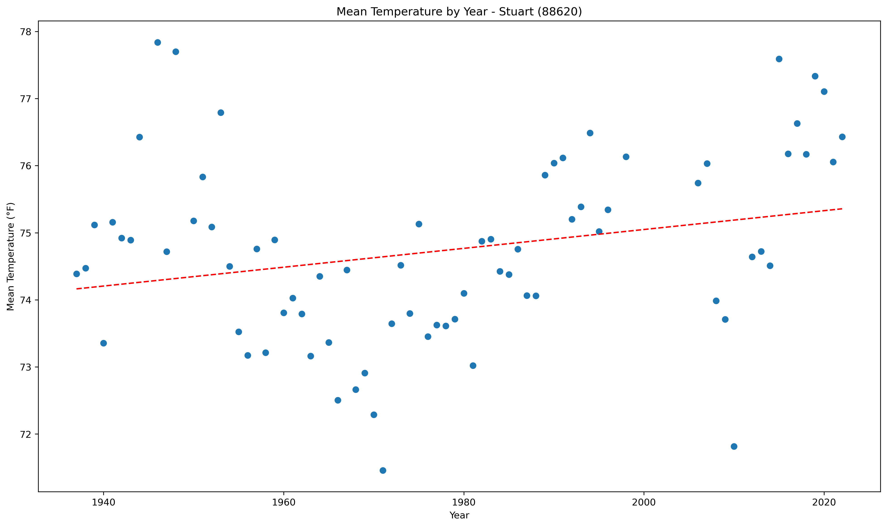</a></div>`)[0];
                popup_faf9dd687da02abe9eb664f489ddd141.setContent(html_7d19e2a6e9cd205a5b685ea211621312);
            
        

        marker_d21b18df91978b24a2cda18dabd0b922.bindPopup(popup_faf9dd687da02abe9eb664f489ddd141)
        ;

        
    
    
            var marker_d055853c82be5b16e662633683739e5c = L.marker(
                [30.39, -84.35],
                {}
            ).addTo(map_ec4c004cf57c215e84f4e973f05e7292);
        
    
            var icon_8bcc0269ccd3bd83729bd0230f3e1d18 = L.AwesomeMarkers.icon(
                {"extraClasses": "fa-rotate-0", "icon": "info-sign", "iconColor": "white", "markerColor": "orange", "prefix": "glyphicon"}
            );
            marker_d055853c82be5b16e662633683739e5c.setIcon(icon_8bcc0269ccd3bd83729bd0230f3e1d18);
        
    
        var popup_96c0077f118238ae7c8ae84f21bfd6eb = L.popup({"maxWidth": 1000, "minWidth": 500});

        
            
                var html_487393f7e992040c2ab6ceee38229b17 = $(`<div id="html_487393f7e992040c2ab6ceee38229b17" style="width: 100.0%; height: 100.0%;"><b>Tallahassee Regional Airport (88758)</b><br>lat: 30.39, lon: -84.35<br><a href='../../static/img/plots/trends/meantemp_yearly/88758_mean_trend_yearly.png' target='_BLANK'></a></div>`)[0];
                popup_96c0077f118238ae7c8ae84f21bfd6eb.setContent(html_487393f7e992040c2ab6ceee38229b17);
            
        

        marker_d055853c82be5b16e662633683739e5c.bindPopup(popup_96c0077f118238ae7c8ae84f21bfd6eb)
        ;

        
    
    
            var marker_eb13a709461d42ab3fe424d99eb94214 = L.marker(
                [27.98, -82.53],
                {}
            ).addTo(map_ec4c004cf57c215e84f4e973f05e7292);
        
    
            var icon_e1f03579210f614198a10bf14add4b16 = L.AwesomeMarkers.icon(
                {"extraClasses": "fa-rotate-0", "icon": "info-sign", "iconColor": "white", "markerColor": "orange", "prefix": "glyphicon"}
            );
            marker_eb13a709461d42ab3fe424d99eb94214.setIcon(icon_e1f03579210f614198a10bf14add4b16);
        
    
        var popup_516f6232b37b0a6d89bad953a2b0050d = L.popup({"maxWidth": 1000, "minWidth": 500});

        
            
                var html_9fd291baa340b38c0839cdcf0b8ea25e = $(`<div id="html_9fd291baa340b38c0839cdcf0b8ea25e" style="width: 100.0%; height: 100.0%;"><b>Tampa Intl Airport (88788)</b><br>lat: 27.98, lon: -82.53<br><a href='../../static/img/plots/trends/meantemp_yearly/88788_mean_trend_yearly.png' target='_BLANK'></a></div>`)[0];
                popup_516f6232b37b0a6d89bad953a2b0050d.setContent(html_9fd291baa340b38c0839cdcf0b8ea25e);
            
        

        marker_eb13a709461d42ab3fe424d99eb94214.bindPopup(popup_516f6232b37b0a6d89bad953a2b0050d)
        ;

        
    
    
            var marker_1dc7329ce0067b6c6c2a1a9be2d5ad19 = L.marker(
                [28.15, -82.75],
                {}
            ).addTo(map_ec4c004cf57c215e84f4e973f05e7292);
        
    
            var icon_e04b56155c3339d395512741c48d6882 = L.AwesomeMarkers.icon(
                {"extraClasses": "fa-rotate-0", "icon": "info-sign", "iconColor": "white", "markerColor": "orange", "prefix": "glyphicon"}
            );
            marker_1dc7329ce0067b6c6c2a1a9be2d5ad19.setIcon(icon_e04b56155c3339d395512741c48d6882);
        
    
        var popup_4d73075a678b0422ee3bccafe027b03e = L.popup({"maxWidth": 1000, "minWidth": 500});

        
            
                var html_760cc24accce429bb91cdb2ba3d9bd82 = $(`<div id="html_760cc24accce429bb91cdb2ba3d9bd82" style="width: 100.0%; height: 100.0%;"><b>Tarpon Springs Sewage Plant (88824)</b><br>lat: 28.15, lon: -82.75<br><a href='../../static/img/plots/trends/meantemp_yearly/88824_mean_trend_yearly.png' target='_BLANK'></a></div>`)[0];
                popup_4d73075a678b0422ee3bccafe027b03e.setContent(html_760cc24accce429bb91cdb2ba3d9bd82);
            
        

        marker_1dc7329ce0067b6c6c2a1a9be2d5ad19.bindPopup(popup_4d73075a678b0422ee3bccafe027b03e)
        ;

        
    
    
            var marker_bf793cad85ea8d7911bf80430a45e6f5 = L.marker(
                [28.61, -80.82],
                {}
            ).addTo(map_ec4c004cf57c215e84f4e973f05e7292);
        
    
            var icon_4b43665d946bd616cac26c865ee7eb0c = L.AwesomeMarkers.icon(
                {"extraClasses": "fa-rotate-0", "icon": "info-sign", "iconColor": "white", "markerColor": "orange", "prefix": "glyphicon"}
            );
            marker_bf793cad85ea8d7911bf80430a45e6f5.setIcon(icon_4b43665d946bd616cac26c865ee7eb0c);
        
    
        var popup_bc1935164b98ac6ac0ac6c79d2ff4e99 = L.popup({"maxWidth": 1000, "minWidth": 500});

        
            
                var html_8eaafcba2461700d524e1fdc5840632d = $(`<div id="html_8eaafcba2461700d524e1fdc5840632d" style="width: 100.0%; height: 100.0%;"><b>Titusville (88942)</b><br>lat: 28.61, lon: -80.82<br><a href='../../static/img/plots/trends/meantemp_yearly/88942_mean_trend_yearly.png' target='_BLANK'></a></div>`)[0];
                popup_bc1935164b98ac6ac0ac6c79d2ff4e99.setContent(html_8eaafcba2461700d524e1fdc5840632d);
            
        

        marker_bf793cad85ea8d7911bf80430a45e6f5.bindPopup(popup_bc1935164b98ac6ac0ac6c79d2ff4e99)
        ;

        
    
    
            var marker_19d1b4a71cd203db5549af48c24f4596 = L.marker(
                [29.41, -82.82],
                {}
            ).addTo(map_ec4c004cf57c215e84f4e973f05e7292);
        
    
            var icon_e7d87e89359ae55118c7997fd9b35be5 = L.AwesomeMarkers.icon(
                {"extraClasses": "fa-rotate-0", "icon": "info-sign", "iconColor": "white", "markerColor": "orange", "prefix": "glyphicon"}
            );
            marker_19d1b4a71cd203db5549af48c24f4596.setIcon(icon_e7d87e89359ae55118c7997fd9b35be5);
        
    
        var popup_84e84727da3024fe19c472a40f8bce1d = L.popup({"maxWidth": 1000, "minWidth": 500});

        
            
                var html_8fcce9e584a82d9ea8e1bb87d1f65622 = $(`<div id="html_8fcce9e584a82d9ea8e1bb87d1f65622" style="width: 100.0%; height: 100.0%;"><b>Usher Lookout Tower (89120)</b><br>lat: 29.41, lon: -82.82<br><a href='../../static/img/plots/trends/meantemp_yearly/89120_mean_trend_yearly.png' target='_BLANK'></a></div>`)[0];
                popup_84e84727da3024fe19c472a40f8bce1d.setContent(html_8fcce9e584a82d9ea8e1bb87d1f65622);
            
        

        marker_19d1b4a71cd203db5549af48c24f4596.bindPopup(popup_84e84727da3024fe19c472a40f8bce1d)
        ;

        
    
    
            var marker_8eeb5b4cc08f8700dd05cea4d07827b6 = L.marker(
                [27.1, -82.43],
                {}
            ).addTo(map_ec4c004cf57c215e84f4e973f05e7292);
        
    
            var icon_c222ea147f3eba1b50bb0890fa3155cb = L.AwesomeMarkers.icon(
                {"extraClasses": "fa-rotate-0", "icon": "info-sign", "iconColor": "white", "markerColor": "red", "prefix": "glyphicon"}
            );
            marker_8eeb5b4cc08f8700dd05cea4d07827b6.setIcon(icon_c222ea147f3eba1b50bb0890fa3155cb);
        
    
        var popup_58103444c4f6be676cf21abb8bd484de = L.popup({"maxWidth": 1000, "minWidth": 500});

        
            
                var html_a05a6d119ed4d1783db884dd9d39ef09 = $(`<div id="html_a05a6d119ed4d1783db884dd9d39ef09" style="width: 100.0%; height: 100.0%;"><b>Venice (89176)</b><br>lat: 27.1, lon: -82.43<br><a href='../../static/img/plots/trends/meantemp_yearly/89176_mean_trend_yearly.png' target='_BLANK'></a></div>`)[0];
                popup_58103444c4f6be676cf21abb8bd484de.setContent(html_a05a6d119ed4d1783db884dd9d39ef09);
            
        

        marker_8eeb5b4cc08f8700dd05cea4d07827b6.bindPopup(popup_58103444c4f6be676cf21abb8bd484de)
        ;

        
    
    
            var marker_cb9e670f4221c892b5d843d25a40ac8d = L.marker(
                [27.65, -80.42],
                {}
            ).addTo(map_ec4c004cf57c215e84f4e973f05e7292);
        
    
            var icon_fc974e4d4040d68ab955504ca1a96b8a = L.AwesomeMarkers.icon(
                {"extraClasses": "fa-rotate-0", "icon": "info-sign", "iconColor": "white", "markerColor": "orange", "prefix": "glyphicon"}
            );
            marker_cb9e670f4221c892b5d843d25a40ac8d.setIcon(icon_fc974e4d4040d68ab955504ca1a96b8a);
        
    
        var popup_9325fca2881f35bda9c0b55afef9ce48 = L.popup({"maxWidth": 1000, "minWidth": 500});

        
            
                var html_f977761d626bed4673d8bb3726d7023b = $(`<div id="html_f977761d626bed4673d8bb3726d7023b" style="width: 100.0%; height: 100.0%;"><b>Vero Beach Intl Airport (89214)</b><br>lat: 27.65, lon: -80.42<br><a href='../../static/img/plots/trends/meantemp_yearly/89214_mean_trend_yearly.png' target='_BLANK'></a></div>`)[0];
                popup_9325fca2881f35bda9c0b55afef9ce48.setContent(html_f977761d626bed4673d8bb3726d7023b);
            
        

        marker_cb9e670f4221c892b5d843d25a40ac8d.bindPopup(popup_9325fca2881f35bda9c0b55afef9ce48)
        ;

        
    
    
            var marker_ccdcae25ae2ef3c3a3d35592d950c288 = L.marker(
                [27.66, -80.37],
                {}
            ).addTo(map_ec4c004cf57c215e84f4e973f05e7292);
        
    
            var icon_a3d3fc00310c38833e87c71ccfa9123a = L.AwesomeMarkers.icon(
                {"extraClasses": "fa-rotate-0", "icon": "info-sign", "iconColor": "white", "markerColor": "red", "prefix": "glyphicon"}
            );
            marker_ccdcae25ae2ef3c3a3d35592d950c288.setIcon(icon_a3d3fc00310c38833e87c71ccfa9123a);
        
    
        var popup_fb80fec83b60006cb435f87dd2102cbd = L.popup({"maxWidth": 1000, "minWidth": 500});

        
            
                var html_b4ba7c0cd0b056bf9f61f23a54210680 = $(`<div id="html_b4ba7c0cd0b056bf9f61f23a54210680" style="width: 100.0%; height: 100.0%;"><b>Vero Beach 4 SE (89219)</b><br>lat: 27.66, lon: -80.37<br><a href='../../static/img/plots/trends/meantemp_yearly/89219_mean_trend_yearly.png' target='_BLANK'></a></div>`)[0];
                popup_fb80fec83b60006cb435f87dd2102cbd.setContent(html_b4ba7c0cd0b056bf9f61f23a54210680);
            
        

        marker_ccdcae25ae2ef3c3a3d35592d950c288.bindPopup(popup_fb80fec83b60006cb435f87dd2102cbd)
        ;

        
    
    
            var marker_5dd4955895174dee52b28d316d3a4125 = L.marker(
                [27.51, -81.89],
                {}
            ).addTo(map_ec4c004cf57c215e84f4e973f05e7292);
        
    
            var icon_14097ea20b711994a8382fe40fa76704 = L.AwesomeMarkers.icon(
                {"extraClasses": "fa-rotate-0", "icon": "info-sign", "iconColor": "white", "markerColor": "blue", "prefix": "glyphicon"}
            );
            marker_5dd4955895174dee52b28d316d3a4125.setIcon(icon_14097ea20b711994a8382fe40fa76704);
        
    
        var popup_293d71dc1f5162db814a9669a4a1f887 = L.popup({"maxWidth": 1000, "minWidth": 500});

        
            
                var html_ffca92017b302e0fc4fe20f2c9832ccc = $(`<div id="html_ffca92017b302e0fc4fe20f2c9832ccc" style="width: 100.0%; height: 100.0%;"><b>Wauchula (89401)</b><br>lat: 27.51, lon: -81.89<br><a href='../../static/img/plots/trends/meantemp_yearly/89401_mean_trend_yearly.png' target='_BLANK'>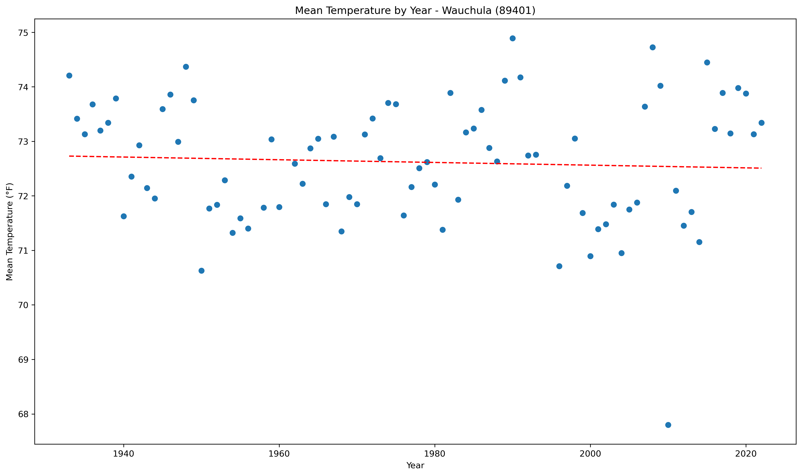</a></div>`)[0];
                popup_293d71dc1f5162db814a9669a4a1f887.setContent(html_ffca92017b302e0fc4fe20f2c9832ccc);
            
        

        marker_5dd4955895174dee52b28d316d3a4125.bindPopup(popup_293d71dc1f5162db814a9669a4a1f887)
        ;

        
    
    
            var marker_cc2d8bd17ef0b41de709e07165ad8d28 = L.marker(
                [28.53, -82.58],
                {}
            ).addTo(map_ec4c004cf57c215e84f4e973f05e7292);
        
    
            var icon_623e11d5a37ab1f8f63ba4fd18e2b4ef = L.AwesomeMarkers.icon(
                {"extraClasses": "fa-rotate-0", "icon": "info-sign", "iconColor": "white", "markerColor": "red", "prefix": "glyphicon"}
            );
            marker_cc2d8bd17ef0b41de709e07165ad8d28.setIcon(icon_623e11d5a37ab1f8f63ba4fd18e2b4ef);
        
    
        var popup_2516346082998be793224f580fa9c48e = L.popup({"maxWidth": 1000, "minWidth": 500});

        
            
                var html_2ac1a6ced89cffeec57d186d2045f330 = $(`<div id="html_2ac1a6ced89cffeec57d186d2045f330" style="width: 100.0%; height: 100.0%;"><b>Weeki Wachee (89430)</b><br>lat: 28.53, lon: -82.58<br><a href='../../static/img/plots/trends/meantemp_yearly/89430_mean_trend_yearly.png' target='_BLANK'></a></div>`)[0];
                popup_2516346082998be793224f580fa9c48e.setContent(html_2ac1a6ced89cffeec57d186d2045f330);
            
        

        marker_cc2d8bd17ef0b41de709e07165ad8d28.bindPopup(popup_2516346082998be793224f580fa9c48e)
        ;

        
    
    
            var marker_5d0d83b853455cd8262d52ab69f346ba = L.marker(
                [26.69, -80.09],
                {}
            ).addTo(map_ec4c004cf57c215e84f4e973f05e7292);
        
    
            var icon_1b76b007ba424586bc6099b6170f0402 = L.AwesomeMarkers.icon(
                {"extraClasses": "fa-rotate-0", "icon": "info-sign", "iconColor": "white", "markerColor": "orange", "prefix": "glyphicon"}
            );
            marker_5d0d83b853455cd8262d52ab69f346ba.setIcon(icon_1b76b007ba424586bc6099b6170f0402);
        
    
        var popup_00fe48ce70eb4ab4a852c29545c92913 = L.popup({"maxWidth": 1000, "minWidth": 500});

        
            
                var html_97ad9fae9901ba5498cb2a9c7c7d85bc = $(`<div id="html_97ad9fae9901ba5498cb2a9c7c7d85bc" style="width: 100.0%; height: 100.0%;"><b>West Palm Beach Intl Airport (89525)</b><br>lat: 26.69, lon: -80.09<br><a href='../../static/img/plots/trends/meantemp_yearly/89525_mean_trend_yearly.png' target='_BLANK'></a></div>`)[0];
                popup_00fe48ce70eb4ab4a852c29545c92913.setContent(html_97ad9fae9901ba5498cb2a9c7c7d85bc);
            
        

        marker_5d0d83b853455cd8262d52ab69f346ba.bindPopup(popup_00fe48ce70eb4ab4a852c29545c92913)
        ;

        
    
    
            var marker_bc4f34f660777287f0ce529ca4fdeda8 = L.marker(
                [30.11, -85.2],
                {}
            ).addTo(map_ec4c004cf57c215e84f4e973f05e7292);
        
    
            var icon_727525932a897dbf7151408879b851d8 = L.AwesomeMarkers.icon(
                {"extraClasses": "fa-rotate-0", "icon": "info-sign", "iconColor": "white", "markerColor": "blue", "prefix": "glyphicon"}
            );
            marker_bc4f34f660777287f0ce529ca4fdeda8.setIcon(icon_727525932a897dbf7151408879b851d8);
        
    
        var popup_76930a1a0df17fc18d06047c8bd7db95 = L.popup({"maxWidth": 1000, "minWidth": 500});

        
            
                var html_e30d0ade0847888d660fe4bafe24ab16 = $(`<div id="html_e30d0ade0847888d660fe4bafe24ab16" style="width: 100.0%; height: 100.0%;"><b>Wewahitchka (89566)</b><br>lat: 30.11, lon: -85.2<br><a href='../../static/img/plots/trends/meantemp_yearly/89566_mean_trend_yearly.png' target='_BLANK'></a></div>`)[0];
                popup_76930a1a0df17fc18d06047c8bd7db95.setContent(html_e30d0ade0847888d660fe4bafe24ab16);
            
        

        marker_bc4f34f660777287f0ce529ca4fdeda8.bindPopup(popup_76930a1a0df17fc18d06047c8bd7db95)
        ;

        
    
</script>
</html>